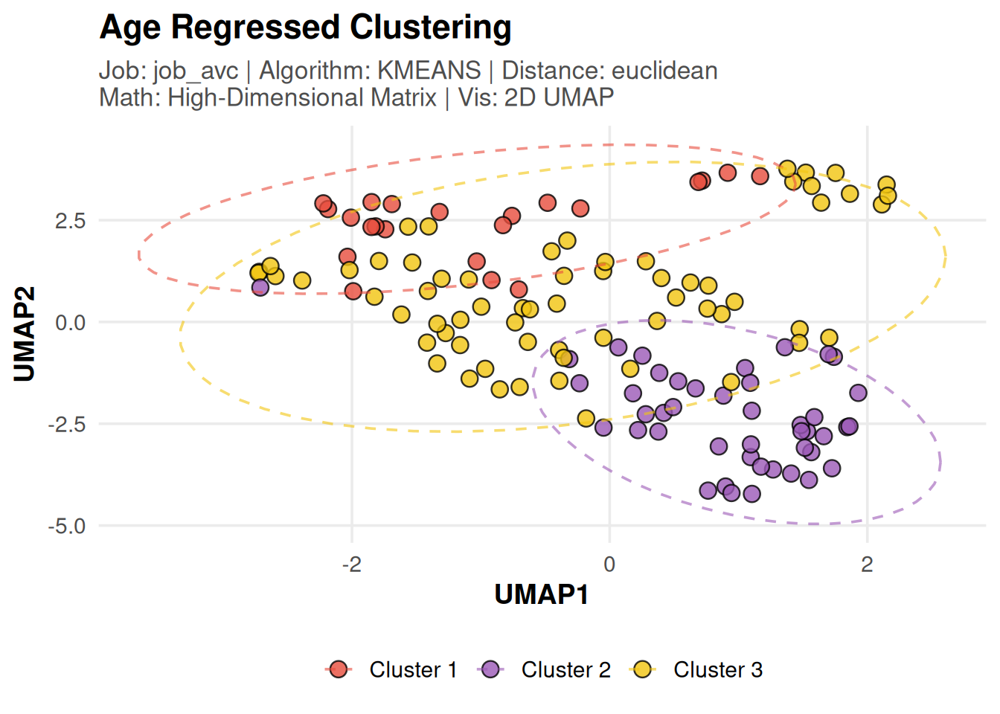
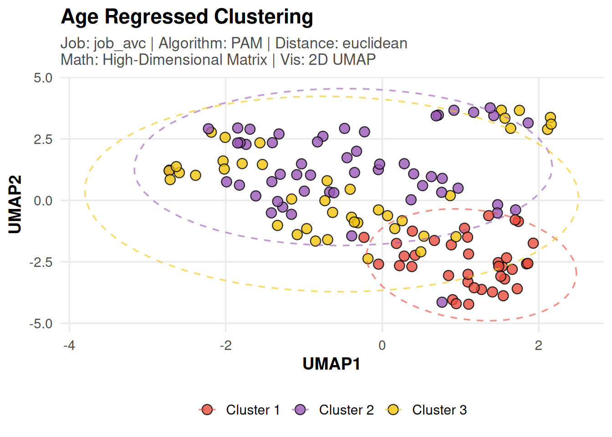
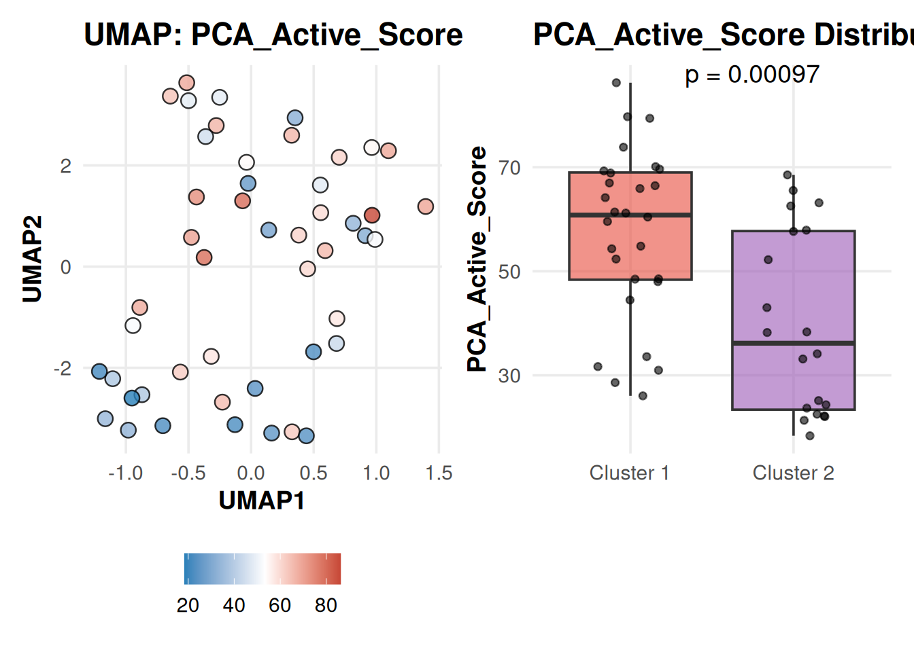

Last updated: 2026-05-04
Checks: 7 0
Knit directory: SSc-USZ/
This reproducible R Markdown analysis was created with workflowr (version 1.7.2). The Checks tab describes the reproducibility checks that were applied when the results were created. The Past versions tab lists the development history.
Great! Since the R Markdown file has been committed to the Git repository, you know the exact version of the code that produced these results.
Great job! The global environment was empty. Objects defined in the global environment can affect the analysis in your R Markdown file in unknown ways. For reproduciblity it’s best to always run the code in an empty environment.
The command set.seed(20260331) was run prior to running
the code in the R Markdown file. Setting a seed ensures that any results
that rely on randomness, e.g. subsampling or permutations, are
reproducible.
Great job! Recording the operating system, R version, and package versions is critical for reproducibility.
Nice! There were no cached chunks for this analysis, so you can be confident that you successfully produced the results during this run.
Great job! Using relative paths to the files within your workflowr project makes it easier to run your code on other machines.
Great! You are using Git for version control. Tracking code development and connecting the code version to the results is critical for reproducibility.
The results in this page were generated with repository version 703cf9a. See the Past versions tab to see a history of the changes made to the R Markdown and HTML files.
Note that you need to be careful to ensure that all relevant files for
the analysis have been committed to Git prior to generating the results
(you can use wflow_publish or
wflow_git_commit). workflowr only checks the R Markdown
file, but you know if there are other scripts or data files that it
depends on. Below is the status of the Git repository when the results
were generated:
Ignored files:
Ignored: .Rhistory
Ignored: .Rproj.user/
Ignored: output/01_data_import_and_qc/
Ignored: output/01a_data_import_and_qc/
Ignored: output/01b_clinical_feature_engineering/
Ignored: output/02_cohort_characterization/
Ignored: output/03a_proteomics_variance/
Ignored: output/03b_proteomics_differential/
Ignored: output/03c_proteomics_clustering/
Ignored: output/03d_proteomics_subgroups/
Ignored: output/randomizer/
Ignored: output/z01_sideproject_ellen/
Ignored: output/z02_sideproject_vascular_2/
Ignored: renv/library/
Ignored: renv/staging/
Untracked files:
Untracked: analysis/03e_proteomics_correlations.Rmd
Untracked: code/randomizer.R
Untracked: core
Unstaged changes:
Modified: analysis/01b_clinical_feature_engineering.Rmd
Modified: analysis/03b_proteomics_differential.Rmd
Modified: analysis/z02_sideproject_vascular_2.Rmd
Modified: code/00_omics_engines.R
Note that any generated files, e.g. HTML, png, CSS, etc., are not included in this status report because it is ok for generated content to have uncommitted changes.
These are the previous versions of the repository in which changes were
made to the R Markdown
(analysis/03c_proteomics_clustering.Rmd) and HTML
(docs/03c_proteomics_clustering.html) files. If you’ve
configured a remote Git repository (see ?wflow_git_remote),
click on the hyperlinks in the table below to view the files as they
were in that past version.
| File | Version | Author | Date | Message |
|---|---|---|---|---|
| Rmd | 703cf9a | alexander-gysin | 2026-05-04 | wflow_publish("analysis/03c_proteomics_clustering.Rmd") |
| html | 95fa2c7 | alexander-gysin | 2026-05-04 | Build site. |
| Rmd | 94eb497 | alexander-gysin | 2026-05-04 | wflow_publish("analysis/03c_proteomics_clustering.Rmd") |
| html | 8b778e3 | alexander-gysin | 2026-05-03 | Build site. |
| Rmd | 4cce275 | alexander-gysin | 2026-05-03 | wflow_publish("analysis/03c_proteomics_clustering.Rmd") |
library(tidyverse)
library(patchwork)
library(here)
library(umap) # Non-linear reduction
library(gtsummary) # Clinical tables
# Knitr Config
knitr::opts_chunk$set(
warning = FALSE,
message = FALSE
)
# Output paths
current_file <- "03c_proteomics_clustering"
output_dir_data <- here::here("output", current_file)
if (!dir.exists(output_dir_data)) dir.create(output_dir_data, recursive = TRUE)
# Source Configuration & Engines
source(here::here("code", "00_omics_engines.R"))
# Load Pre-Cleaned Data (Twin Spine Architecture)
master_spine <- readRDS(here::here("output", "01b_clinical_feature_engineering", "curated_clinical_spine.rds"))
data_dictionary <- readRDS(here::here("output", "01b_clinical_feature_engineering", "clinical_data_dictionary.rds"))
olink_mat <- readRDS(here::here("output", "01a_data_import_and_qc", "clean_olink_matrix.rds"))
# Load High Variance Proteins (generated at end of 03a)
high_var_path <- here::here("output", "03a_proteomics_variance", "high_var_features.rds")
high_var_prots <- if(file.exists(high_var_path)) readRDS(high_var_path) else NULL# 0. Data Dictionary Shield & Base Excludes ------------------------------------
# Automatically identify variables that are mathematically unstable, skewed, or contain outliers
unstable_vars <- data_dictionary %>%
filter(grepl("ZERO VARIANCE|IMBALANCED|SKEWED|OUTLIER", toupper(QC_Flag))) %>%
pull(Variable)
# Base administrative or redundant variables to exclude
base_excludes <- c(
"inCentraxx", "SELECTED", "Subject_ID", "Birth_Year", "Raynaud VAS Unknown",
"Face", "Chest", "Abdomen", "Left_Upper Arms", "Right_Upper Arms",
"Left_Forearms", "Right_Forearms", "Left_Hands", "Right_Hands",
"Left_Fingers", "Right_Fingers", "Left_Thighs", "Right_Thighs",
"Left_Legs", "Right_Legs", "Left_Feet", "Right_Feet", "Active_our",
"Geschlecht", "Entnahmedatum", "Entnahmedatum_Clean", "Distance_in_m"
)
final_excludes <- unique(c(base_excludes, unstable_vars))
# 1. Non-Active Specific High Variance Proteins --------------------------------
na_clin <- master_spine %>% filter(cohort_group == GRP_NON_ACTIVE)
na_mat <- olink_mat[, intersect(colnames(olink_mat), na_clin$Subject_ID)]
na_var_conf <- list(
title = "Non-Active Variance Filter",
top_n_features = 260,
omics_type = "Protein"
)
# Run the variance filter engine specifically on the Non-Active matrix
na_var_res <- wrap_global_variance_filter(na_mat, na_var_conf, output_dir_data)
na_high_var_prots <- na_var_res$features
# 2. Molecular Clustering Configs ----------------------------------------------
clustering_configs <- list(
# Test a 2-cluster split (Full Cohort)
k2_split_filtered = list(
title = "Molecular Endotypes (k=2) | Full Cohort High Variance",
k = 2,
n_neighbors = 15,
include_features = high_var_prots,
include_clinical_vars = unname(unlist(clinical_domains)),
exclude_clinical_vars = final_excludes
),
# Test a 3-cluster split (Full Cohort)
k3_split_filtered = list(
title = "Molecular Endotypes (k=3) | Full Cohort High Variance",
k = 3,
n_neighbors = 15,
include_features = high_var_prots,
include_clinical_vars = unname(unlist(clinical_domains)),
exclude_clinical_vars = final_excludes
),
# Non-Active Sub-Clustering
nonactive_only_k2 = list(
title = "Non-Active Sub-Clustering (k=2) | Internal High Variance",
subset_groups = c(GRP_NON_ACTIVE), # Focus only on Non-Actives
k = 2,
n_neighbors = 5, # Lowered due to much smaller N-size of this subset
include_features = na_high_var_prots, # Using the internally filtered top 260
include_clinical_vars = unname(unlist(clinical_domains)),
exclude_clinical_vars = final_excludes
)
)for (c_id in names(clustering_configs)) {
conf <- clustering_configs[[c_id]]
cat(sprintf("\n\n## %s\n\n", conf$title))
res <- wrap_clustering_pipeline(olink_mat, master_spine, conf, c_id, output_dir_data, get_project_colors)
if (res$status == "success") {
# 1. Print the UMAP
print(res$plots$umap)
cat("\n\n<br>\n\n")
# 2. Print Diagnostic Histograms (if any variables were dropped due to skew)
if (!is.null(res$plots$excluded_hist)) {
cat("#### Diagnostic: Skewed Variables Excluded\n\n")
print(res$plots$excluded_hist)
cat("\n\n<br>\n\n")
}
# 3. Print the Clinical Cross-Reference Table with Log
if (!is.null(res$tables$clinical_profile)) {
cat(sprintf("#### Clinical Profile of %s\n\n", conf$title))
# Print Auto-Filter Log
log_msg <- sprintf("> **Auto-QA/QC Filter Log:**\n> * **Dropped Categorical (<10%% frequency):** %s\n> * **Dropped Continuous (|Skew| > 2.5):** %s\n\n",
ifelse(length(res$log$dropped_cat) > 0, paste(res$log$dropped_cat, collapse = ", "), "None"),
ifelse(length(res$log$dropped_cont) > 0, paste(res$log$dropped_cont, collapse = ", "), "None"))
cat(log_msg)
# Extract HTML from gtsummary object for rendering
tbl_html <- res$tables$clinical_profile %>%
as_kable_extra(format = "html") %>%
kableExtra::kable_styling(bootstrap_options = c("striped", "hover", "condensed"), full_width = FALSE, position = "left")
if (interactive()) {
print(res$tables$clinical_profile)
} else {
cat(as.character(tbl_html))
}
}
} else {
cat(sprintf("> <span style='color:red;'>**SKIPPED:** %s</span>\n\n", res$error_msg))
}
}
Auto-QA/QC Filter Log: * Dropped Categorical (<10% frequency): Right atrium area (cm2), Right ventricular area (cm2) * Dropped Continuous (|Skew| > 2.5): None
| Clinical Variable |
Overall N = 131 |
Cluster 1 N = 74 |
Cluster 2 N = 57 |
p-value |
|---|---|---|---|---|
| Malabsorption syndrome | 15 (16%) | 12 (26%) | 3 (6.7%) | 0.014 |
| Distance in m | 575 (510, 45,743) | 608 (536, 45,822) | 540 (450, 640) | 0.016 |
| Ramified bushy capillaries | 0.060 | |||
| Moderate | 13 (14%) | 3 (6.5%) | 10 (22%) | |
| None | 20 (22%) | 13 (28%) | 7 (16%) | |
| Rare | 58 (64%) | 30 (65%) | 28 (62%) | |
| SSc Antibodies | 84 (88%) | 46 (94%) | 38 (83%) | 0.086 |
| Digital Tip Ulcers | 21 (22%) | 14 (29%) | 7 (15%) | 0.12 |
| eustarAI | 1.09 (0.00, 2.85) | 1.59 (1.00, 3.25) | 1.00 (0.00, 2.50) | 0.12 |
| Inflamm_active | 30 (31%) | 19 (38%) | 11 (24%) | 0.14 |
| Hemoglobin (g/dl) | 12.80 (12.00, 14.20) | 12.70 (12.00, 13.80) | 13.20 (12.00, 14.40) | 0.14 |
| Abnormal Capillaroscopy | 81 (86%) | 39 (81%) | 42 (91%) | 0.2 |
| mRSS Worsening (1yr) | 13 (15%) | 9 (20%) | 4 (9.5%) | 0.2 |
| Telangiectasia | 58 (61%) | 27 (55%) | 31 (67%) | 0.2 |
| fibrotic_active | 33 (34%) | 20 (40%) | 13 (28%) | 0.2 |
| Joint involvement | 30 (32%) | 18 (37%) | 12 (26%) | 0.3 |
| Skin Thickening (Ext. MCP) | 36 (38%) | 21 (43%) | 15 (33%) | 0.3 |
| Sclerodactyly | 23 (26%) | 14 (30%) | 9 (21%) | 0.3 |
| Sex | 0.3 | |||
| Male | 27 (21%) | 13 (18%) | 14 (25%) | |
| Female | 104 (79%) | 61 (82%) | 43 (75%) | |
| Subcutaneous Calcinosis | 23 (24%) | 10 (20%) | 13 (28%) | 0.3 |
| FVC %pred | 92 (80, 101) | 93 (82, 101) | 91 (77, 101) | 0.4 |
| Age | 61 (49, 71) | 61 (48, 68) | 61 (49, 73) | 0.4 |
| Joint Contractures | 31 (33%) | 18 (37%) | 13 (29%) | 0.4 |
| Capillaroscopy Pattern | 62 (70%) | 31 (67%) | 31 (74%) | 0.5 |
| vascular_active | 45 (47%) | 25 (50%) | 20 (43%) | 0.5 |
| Max Borg Dyspnea | 3.00 (1.00, 5.00) | 2.75 (0.75, 4.50) | 3.50 (1.00, 5.00) | 0.6 |
| Total Score | 14.0 (10.0, 22.0) | 14.0 (10.0, 22.0) | 14.5 (10.0, 21.0) | 0.6 |
| Fingertip pitting scars | 47 (49%) | 23 (47%) | 24 (52%) | 0.6 |
| Telangiectasia (any) | 54 (56%) | 27 (54%) | 27 (59%) | 0.6 |
| Intestinal Symptoms | 25 (26%) | 12 (24%) | 13 (28%) | 0.7 |
| Stomach Symptoms | 24 (26%) | 13 (28%) | 11 (24%) | 0.7 |
| DLCO/VA (% predicted) | 77 (65, 88) | 77 (65, 84) | 78 (65, 89) | 0.7 |
| DLCO (SB) (% predicted) | 65 (49, 77) | 66 (56, 77) | 63 (47, 75) | 0.8 |
| Sample_Age | 1.19 (0.96, 1.42) | 1.19 (0.96, 1.46) | 1.16 (0.98, 1.38) | 0.9 |
| LVEF % | 60.0 (58.0, 63.0) | 60.0 (58.0, 63.0) | 60.0 (57.0, 63.0) | >0.9 |
| Forced Vital Capacity (ml) | 3,020 (2,450, 3,535) | 3,030 (2,490, 3,530) | 3,010 (2,340, 3,720) | >0.9 |
| Puffy Fingers | 66 (69%) | 34 (69%) | 32 (70%) | >0.9 |
| Raynaud’s present | 75 (87%) | 41 (87%) | 34 (87%) | >0.9 |
| Proximal Dysphagia | 12 (13%) | 6 (13%) | 6 (13%) | >0.9 |
| Subset_Diffuse | ||||
| 0 | 96 (100%) | 50 (100%) | 46 (100%) | |
| Subset_Limited | ||||
| 0 | 96 (100%) | 50 (100%) | 46 (100%) | |
| Subset_Sine | ||||
| 0 | 96 (100%) | 50 (100%) | 46 (100%) | |
| Score : Raynaud phenomenon | ||||
| 3 | 92 (100%) | 47 (100%) | 45 (100%) | |
| Capillaroscopy Score | ||||
| 2 | 81 (100%) | 39 (100%) | 42 (100%) | |
| SSc Antibody Score | ||||
| 3 | 84 (100%) | 46 (100%) | 38 (100%) | |
| 1 Median (Q1, Q3); n (%) | ||||
| 2 Wilcoxon rank sum test; Pearson’s Chi-squared test; NA; Fisher’s exact test |

Auto-QA/QC Filter Log: * Dropped Categorical (<10% frequency): Right atrium area (cm2), Right ventricular area (cm2) * Dropped Continuous (|Skew| > 2.5): None
| Clinical Variable |
Overall N = 131 |
Cluster 1 N = 42 |
Cluster 2 N = 49 |
Cluster 3 N = 40 |
p-value |
|---|---|---|---|---|---|
| Distance in m | 575 (510, 45,743) | 540 (509, 23,062) | 540 (428, 665) | 45,468 (580, 45,827) | 0.002 |
| Malabsorption syndrome | 15 (16%) | 5 (19%) | 2 (5.1%) | 8 (30%) | 0.021 |
| SSc Antibodies | 84 (88%) | 29 (100%) | 31 (79%) | 24 (89%) | 0.022 |
| mRSS Worsening (1yr) | 13 (15%) | 5 (19%) | 2 (5.6%) | 6 (25%) | 0.073 |
| Capillaroscopy Pattern | 62 (70%) | 14 (54%) | 28 (78%) | 20 (77%) | 0.086 |
| Joint involvement | 30 (32%) | 7 (24%) | 10 (26%) | 13 (48%) | 0.090 |
| Hemoglobin (g/dl) | 12.80 (12.00, 14.20) | 13.20 (12.30, 13.90) | 13.20 (12.00, 14.40) | 12.50 (11.80, 13.80) | 0.2 |
| vascular_active | 45 (47%) | 11 (37%) | 18 (46%) | 16 (59%) | 0.2 |
| fibrotic_active | 33 (34%) | 11 (37%) | 10 (26%) | 12 (44%) | 0.3 |
| Proximal Dysphagia | 12 (13%) | 6 (22%) | 3 (7.7%) | 3 (12%) | 0.3 |
| Sex | 0.3 | ||||
| Male | 27 (21%) | 10 (24%) | 12 (24%) | 5 (13%) | |
| Female | 104 (79%) | 32 (76%) | 37 (76%) | 35 (88%) | |
| Abnormal Capillaroscopy | 81 (86%) | 23 (82%) | 36 (92%) | 22 (81%) | 0.3 |
| LVEF % | 60.0 (58.0, 63.0) | 61.0 (58.5, 64.5) | 60.0 (57.5, 63.0) | 60.0 (58.0, 61.0) | 0.3 |
| Telangiectasia | 58 (61%) | 17 (59%) | 27 (69%) | 14 (52%) | 0.3 |
| DLCO/VA (% predicted) | 77 (65, 88) | 77 (70, 91) | 78 (70, 89) | 76 (63, 82) | 0.4 |
| Inflamm_active | 30 (31%) | 11 (37%) | 9 (23%) | 10 (37%) | 0.4 |
| Skin Thickening (Ext. MCP) | 36 (38%) | 9 (31%) | 14 (36%) | 13 (48%) | 0.4 |
| eustarAI | 1.09 (0.00, 2.85) | 1.21 (1.00, 2.86) | 1.00 (0.00, 2.50) | 1.84 (0.17, 3.44) | 0.4 |
| Stomach Symptoms | 24 (26%) | 7 (25%) | 8 (21%) | 9 (35%) | 0.4 |
| Sclerodactyly | 23 (26%) | 9 (35%) | 8 (22%) | 6 (23%) | 0.5 |
| Subcutaneous Calcinosis | 23 (24%) | 5 (17%) | 10 (26%) | 8 (30%) | 0.5 |
| Telangiectasia (any) | 54 (56%) | 19 (63%) | 22 (56%) | 13 (48%) | 0.5 |
| Joint Contractures | 31 (33%) | 8 (28%) | 12 (32%) | 11 (41%) | 0.6 |
| Forced Vital Capacity (ml) | 3,020 (2,450, 3,535) | 3,025 (2,535, 3,720) | 2,955 (2,190, 3,530) | 3,045 (2,460, 3,330) | 0.6 |
| Puffy Fingers | 66 (69%) | 22 (76%) | 26 (67%) | 18 (67%) | 0.7 |
| Digital Tip Ulcers | 21 (22%) | 7 (24%) | 7 (18%) | 7 (26%) | 0.7 |
| Fingertip pitting scars | 47 (49%) | 14 (48%) | 21 (54%) | 12 (44%) | 0.7 |
| Age | 61 (49, 71) | 62 (49, 68) | 61 (49, 73) | 59 (48, 74) | 0.8 |
| Max Borg Dyspnea | 3.00 (1.00, 5.00) | 3.00 (1.00, 5.00) | 3.50 (1.00, 5.00) | 2.00 (0.50, 4.50) | 0.8 |
| Sample_Age | 1.19 (0.96, 1.42) | 1.20 (0.96, 1.38) | 1.16 (0.98, 1.38) | 1.19 (0.86, 1.49) | 0.8 |
| FVC %pred | 92 (80, 101) | 94 (82, 99) | 91 (76, 102) | 92 (82, 105) | 0.8 |
| Intestinal Symptoms | 25 (26%) | 8 (28%) | 11 (28%) | 6 (22%) | 0.8 |
| Ramified bushy capillaries | 0.9 | ||||
| Moderate | 13 (14%) | 3 (12%) | 7 (18%) | 3 (11%) | |
| None | 20 (22%) | 7 (27%) | 7 (18%) | 6 (22%) | |
| Rare | 58 (64%) | 16 (62%) | 24 (63%) | 18 (67%) | |
| Raynaud’s present | 75 (87%) | 26 (90%) | 28 (85%) | 21 (88%) | >0.9 |
| Total Score | 14.0 (10.0, 22.0) | 14.0 (12.0, 19.0) | 15.0 (10.0, 21.0) | 15.0 (10.0, 24.0) | >0.9 |
| DLCO (SB) (% predicted) | 65 (49, 77) | 66 (47, 77) | 63 (52, 75) | 66 (49, 78) | >0.9 |
| Subset_Diffuse | |||||
| 0 | 96 (100%) | 30 (100%) | 39 (100%) | 27 (100%) | |
| Subset_Limited | |||||
| 0 | 96 (100%) | 30 (100%) | 39 (100%) | 27 (100%) | |
| Subset_Sine | |||||
| 0 | 96 (100%) | 30 (100%) | 39 (100%) | 27 (100%) | |
| Score : Raynaud phenomenon | |||||
| 3 | 92 (100%) | 27 (100%) | 38 (100%) | 27 (100%) | |
| Capillaroscopy Score | |||||
| 2 | 81 (100%) | 23 (100%) | 36 (100%) | 22 (100%) | |
| SSc Antibody Score | |||||
| 3 | 84 (100%) | 29 (100%) | 31 (100%) | 24 (100%) | |
| 1 Median (Q1, Q3); n (%) | |||||
| 2 Kruskal-Wallis rank sum test; Pearson’s Chi-squared test; NA; Fisher’s exact test |

| Version | Author | Date |
|---|---|---|
| 95fa2c7 | alexander-gysin | 2026-05-04 |
Auto-QA/QC Filter Log: * Dropped Categorical (<10% frequency): Right atrium area (cm2), Right ventricular area (cm2), Proximal Dysphagia * Dropped Continuous (|Skew| > 2.5): None
| Clinical Variable |
Overall N = 48 |
Cluster 1 N = 28 |
Cluster 2 N = 20 |
p-value |
|---|---|---|---|---|
| Age | 62 (48, 70) | 67 (55, 75) | 58 (48, 63) | 0.016 |
| Sclerodactyly | 9 (20%) | 2 (7.7%) | 7 (35%) | 0.029 |
| Telangiectasia | 22 (46%) | 16 (57%) | 6 (30%) | 0.063 |
| Telangiectasia (any) | 22 (46%) | 16 (57%) | 6 (30%) | 0.063 |
| Puffy Fingers | 35 (73%) | 18 (64%) | 17 (85%) | 0.11 |
| Max Borg Dyspnea | 1.75 (0.50, 3.50) | 3.00 (0.50, 4.00) | 1.00 (0.50, 2.00) | 0.12 |
| Capillaroscopy Pattern | 25 (58%) | 17 (68%) | 8 (44%) | 0.12 |
| Distance in m | 570 (510, 45,448) | 540 (443, 743) | 615 (540, 45,509) | 0.13 |
| Sample_Age | 1.36 (1.04, 1.61) | 1.24 (1.04, 1.51) | 1.46 (1.08, 1.62) | 0.2 |
| Ramified bushy capillaries | 0.2 | |||
| Moderate | 6 (13%) | 5 (19%) | 1 (5.3%) | |
| None | 12 (26%) | 5 (19%) | 7 (37%) | |
| Rare | 28 (61%) | 17 (63%) | 11 (58%) | |
| Fingertip pitting scars | 16 (33%) | 11 (39%) | 5 (25%) | 0.3 |
| LVEF % | 60.0 (57.0, 64.0) | 60.0 (57.0, 65.0) | 61.0 (59.0, 61.0) | 0.4 |
| SSc Antibodies | 40 (83%) | 22 (79%) | 18 (90%) | 0.4 |
| Abnormal Capillaroscopy | 39 (81%) | 24 (86%) | 15 (75%) | 0.5 |
| Sex | 0.5 | |||
| Male | 10 (21%) | 7 (25%) | 3 (15%) | |
| Female | 38 (79%) | 21 (75%) | 17 (85%) | |
| Intestinal Symptoms | 12 (25%) | 8 (29%) | 4 (20%) | 0.5 |
| Stomach Symptoms | 12 (26%) | 6 (21%) | 6 (32%) | 0.5 |
| Hemoglobin (g/dl) | 13.20 (12.10, 14.30) | 13.20 (12.00, 14.70) | 13.10 (12.50, 13.80) | 0.6 |
| Joint Contractures | 5 (10%) | 2 (7.1%) | 3 (15%) | 0.6 |
| Malabsorption syndrome | 5 (11%) | 2 (7.4%) | 3 (15%) | 0.6 |
| DLCO (SB) (% predicted) | 68 (58, 78) | 68 (52, 78) | 68 (60, 80) | 0.6 |
| fibrotic_active | 6 (13%) | 3 (11%) | 3 (15%) | 0.7 |
| Digital Tip Ulcers | 6 (13%) | 3 (11%) | 3 (15%) | 0.7 |
| Subcutaneous Calcinosis | 7 (15%) | 5 (18%) | 2 (10%) | 0.7 |
| vascular_active | 13 (27%) | 7 (25%) | 6 (30%) | 0.7 |
| Raynaud’s present | 35 (81%) | 21 (84%) | 14 (78%) | 0.7 |
| Forced Vital Capacity (ml) | 3,260 (2,580, 3,710) | 3,270 (2,340, 3,720) | 3,245 (2,845, 3,660) | 0.8 |
| Total Score | 12.0 (10.0, 15.0) | 12.0 (9.0, 15.0) | 11.0 (10.0, 14.0) | 0.8 |
| DLCO/VA (% predicted) | 79 (70, 89) | 79 (70, 89) | 78 (66, 85) | 0.8 |
| eustarAI | 0.9 | |||
| 0 | 23 (48%) | 14 (50%) | 9 (45%) | |
| 0.168 | 1 (2.1%) | 0 (0%) | 1 (5.0%) | |
| 1 | 18 (38%) | 10 (36%) | 8 (40%) | |
| 1.085 | 2 (4.2%) | 1 (3.6%) | 1 (5.0%) | |
| 1.17 | 1 (2.1%) | 1 (3.6%) | 0 (0%) | |
| 1.425 | 1 (2.1%) | 1 (3.6%) | 0 (0%) | |
| 1.67 | 1 (2.1%) | 1 (3.6%) | 0 (0%) | |
| 1.765 | 1 (2.1%) | 0 (0%) | 1 (5.0%) | |
| FVC %pred | 91 (83, 102) | 91 (83, 105) | 92 (85, 101) | >0.9 |
| Joint involvement | 8 (17%) | 5 (18%) | 3 (15%) | >0.9 |
| Skin Thickening (Ext. MCP) | 7 (15%) | 4 (14%) | 3 (15%) | >0.9 |
| Inflamm_active | ||||
| No | 48 (100%) | 28 (100%) | 20 (100%) | |
| Subset_Diffuse | ||||
| 0 | 48 (100%) | 28 (100%) | 20 (100%) | |
| Subset_Limited | ||||
| 0 | 48 (100%) | 28 (100%) | 20 (100%) | |
| Subset_Sine | ||||
| 0 | 48 (100%) | 28 (100%) | 20 (100%) | |
| mRSS Worsening (1yr) | ||||
| No | 41 (100%) | 25 (100%) | 16 (100%) | |
| Score : Raynaud phenomenon | ||||
| 3 | 46 (100%) | 27 (100%) | 19 (100%) | |
| Capillaroscopy Score | ||||
| 2 | 39 (100%) | 24 (100%) | 15 (100%) | |
| SSc Antibody Score | ||||
| 3 | 40 (100%) | 22 (100%) | 18 (100%) | |
| 1 Median (Q1, Q3); n (%) | ||||
| 2 Wilcoxon rank sum test; Fisher’s exact test; NA; Pearson’s Chi-squared test |
# Clean memory
rm(c_id, conf, res)
invisible(gc())# OMICS ENGINES: High-Dimensional Analysis Functions ---------------------------
library(limma)
library(FactoMineR)
library(factoextra)
library(clusterProfiler)
library(enrichplot)
library(pheatmap)
library(ggrepel)
library(patchwork)
library(ggridges)
library(ComplexHeatmap)
library(UpSetR)
library(glmnet)
library(circlize)
library(ggVennDiagram)
library(variancePartition)
library(BiocParallel)
library(future)
library(future.apply)
library(car)
# PART 1: THE MASTER PIPELINE WRAPPERS (The "Managers") ------------------------
# 1. PCA Pipeline Wrapper ------------------------------------------------------
# Description:
# Executes a complete Principal Component Analysis pipeline. It filters data,
# calculates PCA, and saves a suite of dynamically scaled visualizations to PNG,
# returning the ggplot objects and their direct file paths.
# Args:
# omics_mat: Numeric matrix (features in rows, subjects in columns).
# clin_df: Aligned clinical metadata dataframe.
# pca_conf: List of settings (title, subset_to_contrast, color_vars).
# pca_id: String identifier for saving outputs.
# base_output_dir: Path for saving results.
# project_colors_func: Function to map cohort specific hex codes.
# Returns:
# Nested list with 'plots' (ggplot objects) and 'paths' (string file paths).
wrap_pca_pipeline <- function(omics_mat, clin_df, pca_conf, pca_id, base_output_dir, project_colors_func) {
# Setup Directories
pca_base_dir <- file.path(base_output_dir, "PCA")
pca_sub_dir <- file.path(pca_base_dir, pca_id)
if (!dir.exists(pca_sub_dir)) dir.create(pca_sub_dir, recursive = TRUE)
# Data Filtering & Subset
if (!is.null(pca_conf$subset_to_contrast)) {
target_col <- pca_conf$subset_to_contrast$group_col
target_lvls <- pca_conf$subset_to_contrast$target_groups
clin_df <- clin_df %>% filter(!!sym(target_col) %in% target_lvls)
}
valid_barcodes <- intersect(colnames(omics_mat), clin_df$Subject_ID)
clin_df <- clin_df %>% filter(Subject_ID %in% valid_barcodes)
mat_sub <- omics_mat[, clin_df$Subject_ID, drop = FALSE]
# PCA Calculation
pca_res <- FactoMineR::PCA(t(mat_sub), scale.unit = TRUE, graph = FALSE)
plots <- list()
paths <- list() # Store paths for HTML rendering
# --- AESTHETIC REFACTOR: TITLE WRAPPING ---
# We wrap the main title at ~55 characters so it never overflows.
wrapped_main_title <- stringr::str_wrap(pca_conf$title, width = 55)
# Generate Individual Plots
plots[["scree"]] <- fviz_eig(pca_res, addlabels = TRUE) +
theme_project_base() +
labs(title = sprintf("%s: Variance Explained (Scree)", wrapped_main_title))
plots[["loadings"]] <- fviz_pca_var(pca_res, select.var = list(contrib = 30),
col.var = "contrib",
gradient.cols = c("#00AFBB", "#E7B800", "#FC4E07"),
repel = TRUE) +
theme_project_base() +
guides(colour = guide_colorbar(barwidth = unit(8, "cm"), barheight = unit(0.3, "cm"))) +
labs(title = sprintf("%s: PCA Loadings (Top 30)", wrapped_main_title))
plots[["pc1_drivers"]] <- fviz_contrib(pca_res, choice = "var", axes = 1, top = 10, fill = "grey30", color = "grey30") +
theme_project_base() + coord_flip() + labs(title = "Top PC1 Drivers")
plots[["pc2_drivers"]] <- fviz_contrib(pca_res, choice = "var", axes = 2, top = 10, fill = "grey30", color = "grey30") +
theme_project_base() + coord_flip() + labs(title = "Top PC2 Drivers")
# Variable Overlays (Individual and Merged)
overlay_plots_for_grid <- list()
for (c_var in pca_conf$color_vars) {
if (!(c_var %in% colnames(clin_df))) next
# --- AESTHETIC REFACTOR: SPLIT TITLE/SUBTITLE ---
# Failsafe: Replicate design decision for interactive viewing
interact_main_title <- stringr::str_wrap(pca_conf$title, width = 50)
interact_labs_list <- labs(title = interact_main_title, subtitle = paste("Colored by:", c_var))
clean_vec <- clin_df[[c_var]][!is.na(clin_df[[c_var]])]
if (length(clean_vec) == 0) next
# A. CONTINUOUS VARIABLE LOGIC (Reverted to Viridis from config)
if (is.numeric(clin_df[[c_var]])) {
cont_pal <- if(exists("FALLBACK_CONT_PALETTE")) FALLBACK_CONT_PALETTE else "viridis"
p <- fviz_pca_ind(pca_res, label = "none", col.ind = clin_df[[c_var]], legend.title = c_var) +
scale_color_viridis_c(option = cont_pal, na.value = "grey85") +
theme_project_base() + interact_labs_list
# B. CATEGORICAL VARIABLE LOGIC
} else {
clin_df[[c_var]] <- as.factor(clin_df[[c_var]])
lvl_names <- levels(clin_df[[c_var]])
mapped_colors <- project_colors_func(lvl_names)
if (all(mapped_colors == "#333333")) {
safe_pal <- if(exists("FALLBACK_CAT_PALETTE")) FALLBACK_CAT_PALETTE else c("#E69F00", "#56B4E9", "#009E73", "#D55E00", "#CC79A7", "#0072B2", "#F0E442", "#999999")
if (length(lvl_names) <= length(safe_pal)) {
mapped_colors <- safe_pal[1:length(lvl_names)]
} else {
mapped_colors <- colorRampPalette(safe_pal)(length(lvl_names))
}
}
p <- fviz_pca_ind(pca_res, label = "none", habillage = clin_df[[c_var]],
palette = mapped_colors,
addEllipses = TRUE) +
theme_project_base() + interact_labs_list
}
plots[[paste0("PCA_Plot_", c_var)]] <- p
# Grid Title Setup (Cleaner than interactive viewer)
overlay_plots_for_grid[[c_var]] <- p + labs(title = wrapped_main_title, subtitle = paste("Colored by:", c_var))
}
# Automated Saving (With filename sanitization)
for (p_name in names(plots)) {
# Sanitize to prevent '%' crashes
safe_p_name <- gsub("%", "pct", p_name)
safe_p_name <- gsub("[^A-Za-z0-9_.-]", "_", safe_p_name)
safe_p_name <- gsub("_+", "_", safe_p_name)
file_path <- file.path(pca_sub_dir, paste0(pca_id, "_", safe_p_name, ".png"))
ggsave(filename = file_path, plot = plots[[p_name]], width = 7, height = 6, dpi = 300, bg = "white")
paths[[p_name]] <- file_path # Store path
}
# Stitch & Save Merged Drivers
driver_grid <- (plots[["pc1_drivers"]] | plots[["pc2_drivers"]]) +
plot_annotation(title = sprintf("%s: PCA Variance Drivers", wrapped_main_title),
tag_levels = 'A', theme = theme(plot.title = element_text(size = 16, face = "bold")))
driver_path <- file.path(pca_sub_dir, paste0(pca_id, "_Merged_Drivers.png"))
ggsave(driver_path, driver_grid, width = 12, height = 6, dpi = 300, bg="white")
plots[["merged_drivers"]] <- driver_grid
paths[["merged_drivers"]] <- driver_path
# Stitch & Save Merged Overlays (Dynamic height!)
if (length(overlay_plots_for_grid) > 0) {
ncol_val <- if(length(overlay_plots_for_grid) > 2) 2 else 1
master_scatter_grid <- wrap_plots(overlay_plots_for_grid, ncol = ncol_val) +
plot_annotation(title = wrapped_main_title, subtitle = "Hierarchical Grid: Metadata Colored Overlays",
tag_levels = 'A', theme = theme(plot.title = element_text(size = 18, face = "bold")))
overlay_path <- file.path(pca_sub_dir, paste0(pca_id, "_Merged_Scatter_Overlays.png"))
# Calculation handles odd number of plots gracefully
ggsave(overlay_path, master_scatter_grid,
width = 14, height = (6 * ceiling(length(overlay_plots_for_grid)/2)), dpi = 300, bg="white")
plots[["merged_overlays"]] <- master_scatter_grid
paths[["merged_overlays"]] <- overlay_path
}
return(list(plots = plots, paths = paths))
}
# 2. DEA & Discovery Pipeline Wrapper ------------------------------------------
# Description:
# Orchestrates the entire Differential Expression Analysis (DEA) workflow.
# It cleans the data, runs the Limma engine for significance, generates Volcano
# plots, extracts top features for a Heatmap, and performs GSEA pathway analysis.
# Args:
# omics_mat: Cleaned omics matrix.
# clin_df: Clinical metadata dataframe.
# dea_conf: List with contrast details (groups, covariates, cutoffs).
# dea_id: String identifier for this run.
# base_output_dir: Path for saving outputs.
# go_db: Gene Ontology/Pathway database object for GSEA.
# omics_config: Global config settings (p-value cutoffs, min set size).
# heatmap_config: Settings for heatmap rendering.
# project_colors_func: Function for cohort color mapping.
# Returns:
# A nested list containing 'status', 'plots', 'tables', and 'data'.
wrap_dea_pipeline <- function(omics_mat, clin_df, dea_conf, dea_id, base_output_dir,
go_db, omics_config, heatmap_config, project_colors_func) {
results <- list(status = "success", plots = list(), tables = list(), data = list())
# Setup Directories
dea_base_dir <- file.path(base_output_dir, "DEA")
dea_sub_dir <- file.path(dea_base_dir, dea_id)
if (!dir.exists(dea_sub_dir)) dir.create(dea_sub_dir, recursive = TRUE)
# Pre-flight: Diagnostic Filtering
if("Sample_Age" %in% colnames(clin_df)) clin_df$Sample_Age <- as.numeric(clin_df$Sample_Age)
req_cols <- c(dea_conf$group_col, dea_conf$covariates)
available_cols <- intersect(req_cols, colnames(clin_df))
clin_sub <- clin_df %>%
filter(!!sym(dea_conf$group_col) %in% c(dea_conf$target_groups, dea_conf$ref_groups)) %>%
drop_na(all_of(available_cols))
n_target <- sum(clin_sub[[dea_conf$group_col]] %in% dea_conf$target_groups)
n_ref <- sum(clin_sub[[dea_conf$group_col]] %in% dea_conf$ref_groups)
results$diagnostics <- list(n_target = n_target, n_ref = n_ref)
if(n_target < 2 || n_ref < 2) {
results$status <- "failed"
results$error_msg <- sprintf("Too few samples after NA filter (%d T vs %d R)", n_target, n_ref)
return(results)
}
# Execution Phase
# A. Limma DEA
limma_res <- run_limma_engine(omics_mat, clin_df, dea_conf, project_colors_func)
if (is.null(limma_res)) {
results$status <- "failed"; results$error_msg <- "Limma engine failed"; return(results)
}
results$data$dea <- limma_res$data
results$plots$volcano <- limma_res$volcano
write_csv(limma_res$data, file.path(dea_sub_dir, paste0(dea_id, "_DEA_Full_Results.csv")))
ggsave(file.path(dea_sub_dir, paste0(dea_id, "_Volcano.png")), limma_res$volcano, width = 8, height = 7, dpi=300)
# B. Significant Table extraction
sig_table <- limma_res$data %>%
filter(Significance != "Not Significant") %>%
select(Feature, logFC, adj.P.Val, Significance) %>%
arrange(adj.P.Val)
results$tables$significant_proteins <- sig_table
write_csv(sig_table, file.path(dea_sub_dir, paste0(dea_id, "_Significant_Proteins.csv")))
# C. Heatmap
custom_map <- if(!is.null(dea_conf$custom_color_map)) dea_conf$custom_color_map else NULL
results$plots$heatmap <- run_heatmap_engine(omics_mat, clin_sub, limma_res$data,
title = dea_conf$title,
n_top = heatmap_config$top_n,
split_by_group = heatmap_config$split_by_group,
split_col = dea_conf$group_col,
custom_color_map = custom_map)
png(file.path(dea_sub_dir, paste0(dea_id, "_Heatmap_Top", heatmap_config$top_n, ".png")),
width=10, height=12, units="in", res=300)
draw(results$plots$heatmap); dev.off()
# D. GSEA
gsea_res <- run_gsea_engine(limma_res$data, go_db, omics_config, dea_conf$title)
if (!is.null(gsea_res)) {
results$data$gsea <- gsea_res$data
results$plots$gsea_dotplot <- gsea_res$dotplot
results$plots$gsea_ridge <- gsea_res$ridgeplot
write_csv(gsea_res$data, file.path(dea_sub_dir, paste0(dea_id, "_GSEA_Results.csv")))
ggsave(file.path(dea_sub_dir, paste0(dea_id, "_GSEA_Dotplot.png")), gsea_res$dotplot, width = 9, height = 7, dpi=300)
if(!is.null(gsea_res$ridgeplot)) {
ggsave(file.path(dea_sub_dir, paste0(dea_id, "_GSEA_Ridgeplot.png")), gsea_res$ridgeplot, width = 9, height = 8, dpi=300)
}
}
return(results)
}
# 3. Trajectory Mapping Pipeline Wrapper ---------------------------------------
# Description:
# Takes the outputs of two different DEA contrasts (e.g., A vs C and B vs C)
# and intersects them to find shared and specific biological drivers. Generates
# 4-quadrant scatter plots for proteins and pathways, plus a Venn diagram.
# Args:
# cross_conf: Config specifying which two contrasts to compare.
# cross_id: String identifier for this trajectory analysis.
# master_dea: Named list of previously generated DEA results.
# master_gsea: Named list of previously generated GSEA results.
# contrast_configs: Metadata definitions of the original contrasts.
# base_output_dir: Root directory for saving results.
# project_colors_func: Color mapping function.
# highlight_color: Color to use for "Shared" significant features.
# omics_config: Global config settings.
# Returns:
# A list of combined multi-contrast plots (trajectory, venn, pathways).
wrap_trajectory_pipeline <- function(cross_conf, cross_id, master_dea, master_gsea,
contrast_configs, base_output_dir,
project_colors_func, highlight_color, omics_config) {
results <- list(plots = list(), status = "success")
# Fetch Source Data & Setup Labels
dea_x <- master_dea[[cross_conf$x_axis_contrast]]
dea_y <- master_dea[[cross_conf$y_axis_contrast]]
gsea_x <- master_gsea[[cross_conf$x_axis_contrast]]
gsea_y <- master_gsea[[cross_conf$y_axis_contrast]]
if (is.null(dea_x) || is.null(dea_y)) {
results$status <- "failed"; results$error_msg <- "Source DEA results missing"; return(results)
}
name_x <- contrast_configs[[cross_conf$x_axis_contrast]]$title
name_y <- contrast_configs[[cross_conf$y_axis_contrast]]$title
vs_label <- sprintf("%s VS %s", name_x, name_y)
color_x <- project_colors_func(contrast_configs[[cross_conf$x_axis_contrast]]$target_groups[1])
color_y <- project_colors_func(contrast_configs[[cross_conf$y_axis_contrast]]$target_groups[1])
traj_sub_dir <- file.path(base_output_dir, "Trajectories", cross_id)
if (!dir.exists(traj_sub_dir)) dir.create(traj_sub_dir, recursive = TRUE)
# A. PROTEIN TRAJECTORY
results$plots$protein_trajectory <- run_cross_contrast_engine(
dea_x, dea_y, cross_conf, name_x, name_y, color_x, color_y, highlight_color,
title = paste("Protein Trajectory:", vs_label)
)
if(!is.null(results$plots$protein_trajectory)) {
ggsave(file.path(traj_sub_dir, paste0(cross_id, "_Protein_Trajectory.png")),
results$plots$protein_trajectory, width=9, height=9, dpi=300, bg="white")
}
# B. VENN DIAGRAM
sig_x <- dea_x %>% filter(Significance != "Not Significant") %>% pull(Feature)
sig_y <- dea_y %>% filter(Significance != "Not Significant") %>% pull(Feature)
venn_data <- list(only_x = length(setdiff(sig_x, sig_y)),
only_y = length(setdiff(sig_y, sig_x)),
shared = length(intersect(sig_x, sig_y)))
if(sum(unlist(venn_data)) > 0) {
theta <- seq(0, 2 * pi, length.out = 100)
p_venn <- ggplot() +
geom_polygon(data = data.frame(x = -0.5 + cos(theta), y = sin(theta)), aes(x, y), fill = color_x, alpha = 0.3, color = color_x, linewidth = 1.2) +
geom_polygon(data = data.frame(x = 0.5 + cos(theta), y = sin(theta)), aes(x, y), fill = color_y, alpha = 0.3, color = color_y, linewidth = 1.2) +
annotate("text", x = -0.6, y = 1.3, label = name_x, size = 4.5, fontface = "bold", color = color_x) +
annotate("text", x = 0.6, y = 1.3, label = name_y, size = 4.5, fontface = "bold", color = color_y) +
annotate("text", x = -0.9, y = 0, label = venn_data$only_x, size = 6, fontface = "bold") +
annotate("text", x = 0.9, y = 0, label = venn_data$only_y, size = 6, fontface = "bold") +
annotate("text", x = 0, y = 0, label = venn_data$shared, size = 7, fontface = "bold") +
theme_void() + coord_fixed(clip = "off", xlim = c(-1.8, 1.8), ylim = c(-1.5, 1.5)) +
labs(title = paste("DEA Venn:", vs_label)) +
theme(plot.title = element_text(hjust = 0.5, face = "bold", size = rel(1.4)))
results$plots$venn <- p_venn
ggsave(file.path(traj_sub_dir, paste0(cross_id, "_Venn_Intersection.png")), p_venn, width=8, height=6, dpi=300, bg="white")
}
# C. PATHWAY TRAJECTORY
if (!is.null(gsea_x) && !is.null(gsea_y)) {
p_cutoff <- omics_config$gsea_p_cutoff
rank_var <- if(!is.null(cross_conf$pathway_rank_var)) cross_conf$pathway_rank_var else "p.adjust"
n_per_quad <- if(!is.null(cross_conf$top_n_pathways)) cross_conf$top_n_pathways else 10
merged_gsea <- inner_join(
gsea_x %>% select(Description, NES_X = NES, p_X = p.adjust),
gsea_y %>% select(Description, NES_Y = NES, p_Y = p.adjust),
by = "Description"
) %>% mutate(
Sig_X = p_X < p_cutoff, Sig_Y = p_Y < p_cutoff,
Signature = case_when(Sig_X & Sig_Y ~ "Shared Drivers", Sig_X & !Sig_Y ~ sprintf("%s Specific", name_x), !Sig_X & Sig_Y ~ sprintf("%s Specific", name_y), TRUE ~ "Not Significant"),
Quadrant = case_when(NES_X > 0 & NES_Y > 0 ~ "Up-Up", NES_X < 0 & NES_Y < 0 ~ "Down-Down", NES_X > 0 & NES_Y < 0 ~ "Up-Down", NES_X < 0 & NES_Y > 0 ~ "Down-Up", TRUE ~ "None"),
rank_score = (p_X + p_Y)
)
top_paths <- merged_gsea %>%
filter(Signature != "Not Significant") %>%
group_by(Quadrant) %>%
slice_min(order_by = !!sym(rank_var), n = n_per_quad, with_ties = FALSE) %>%
ungroup()
method_caption <- sprintf("Top %d pathways per quadrant selected by lowest %s (Significant in at least one contrast).", n_per_quad, rank_var)
color_map <- setNames(c("black", color_x, color_y), c("Shared Drivers", sprintf("%s Specific", name_x), sprintf("%s Specific", name_y)))
p_path <- ggplot(merged_gsea, aes(x = NES_X, y = NES_Y)) +
geom_abline(slope = 1, intercept = 0, linetype = "dashed", color = "grey60") +
geom_vline(xintercept = 0, color = "grey40") + geom_hline(yintercept = 0, color = "grey40") +
geom_point(aes(color = Signature), alpha = 0.5, size = 2) +
geom_text_repel(data = top_paths, aes(label = Description), size = 3, color = "black", box.padding = 0.5, max.overlaps = Inf) +
scale_color_manual(values = color_map) +
theme_project_base() +
labs(title = str_wrap(paste("Pathway Trajectory:", vs_label), 60),
x = paste(name_x, "(NES)"), y = paste(name_y, "(NES)"),
caption = method_caption)
results$plots$pathway_trajectory <- p_path
ggsave(file.path(traj_sub_dir, paste0(cross_id, "_Pathway_Trajectory.png")), p_path, width=11, height=9, dpi=300, bg="white")
}
return(results)
}
# 4. Predictive Modeling Pipeline Wrapper --------------------------------------
# Description:
# Sets up a penalized logistic regression (LASSO) using glmnet. This wrapper
# filters the cohorts to a binary classification task, runs cross-validation
# to find the optimal lambda, and extracts the features with non-zero weights.
# Args:
# omics_mat: Cleaned omics matrix.
# clin_df: Clinical metadata dataframe.
# lasso_conf: Target column and the two groups to classify.
# model_id: String identifier for saving outputs.
# base_output_dir: Path for saving results.
# Returns:
# List containing the CV curve plot, the coefficients bar chart, and weight data.
wrap_predictive_pipeline <- function(omics_mat, clin_df, lasso_conf, model_id, base_output_dir) {
results <- list(status = "success", plots = list(), data = list())
# Setup Directories
pred_base_dir <- file.path(base_output_dir, "LASSO_Models")
pred_sub_dir <- file.path(pred_base_dir, model_id)
if (!dir.exists(pred_sub_dir)) dir.create(pred_sub_dir, recursive = TRUE)
# Run LASSO Engine
lasso_res <- run_lasso_engine(omics_mat, clin_df, lasso_conf$group_col,
lasso_conf$target_groups, title = lasso_conf$title)
if (is.null(lasso_res)) {
results$status <- "failed"; results$error_msg <- "Model failed to converge or insufficient groups."; return(results)
}
# Package Results
results$data$lasso <- lasso_res$data
results$plots$lasso_cv <- lasso_res$cv_plot
results$plots$lasso_weights <- lasso_res$coeff_plot
# Automated Saving
write_csv(lasso_res$data, file.path(pred_sub_dir, paste0(model_id, "_LASSO_Coefficients.csv")))
png(file.path(pred_sub_dir, paste0(model_id, "_LASSO_CV.png")), width=7, height=6, units="in", res=300)
plot(lasso_res$cv_plot); title(main = sprintf("%s: LASSO Tuning", lasso_conf$title), line = 2.5); dev.off()
ggsave(file.path(pred_sub_dir, paste0(model_id, "_LASSO_Weights.png")), lasso_res$coeff_plot, width=7, height=6, dpi=300, bg="white")
return(results)
}
# 5a. Joint VPA Wrapper --------------------------------------------------------
wrap_vpa_pipeline <- function(omics_mat, clin_df, vpa_conf, vpa_id, base_output_dir, top_n_plot = 30) {
results <- list(status = "success", plots = list(), data = list())
vpa_sub_dir <- file.path(base_output_dir, "VPA_Joint", vpa_id)
if (!dir.exists(vpa_sub_dir)) dir.create(vpa_sub_dir, recursive = TRUE)
min_minority <- if(!is.null(vpa_conf$min_minority_pct)) vpa_conf$min_minority_pct else 0.10
# 1. Variable Safety Checks
existing_vars <- intersect(vpa_conf$variables, colnames(clin_df))
if(length(existing_vars) == 0) return(list(status = "failed", error_msg = "No matching variables found."))
# 2. Align Data, Purge NAs, and Scale Numerics
clin_sub <- clin_df %>%
select(Subject_ID, any_of(existing_vars)) %>%
drop_na() %>%
droplevels() %>%
mutate(across(where(is.numeric), ~ as.numeric(scale(.))))
valid_ids <- intersect(colnames(omics_mat), clin_sub$Subject_ID)
clin_sub <- clin_sub %>% filter(Subject_ID %in% valid_ids)
if (nrow(clin_sub) < 15) {
return(list(status = "failed", error_msg = sprintf("NA-Wipeout: Only %d patients remained after requiring complete cases.", nrow(clin_sub))))
}
# 3. Build Formula & Protect Against Ghost Levels + Class Imbalance
formula_terms <- sapply(existing_vars, function(v) {
if ((is.factor(clin_sub[[v]]) || is.character(clin_sub[[v]])) && length(unique(clin_sub[[v]])) < 2) {
return(NULL)
}
is_categorical <- is.factor(clin_sub[[v]]) || is.character(clin_sub[[v]]) || is.logical(clin_sub[[v]])
if (is_categorical) {
tbl <- prop.table(table(clin_sub[[v]]))
if (length(tbl) < 2 || min(tbl) < min_minority) return(NULL)
}
num_levels <- length(unique(clin_sub[[v]]))
if (is_categorical && num_levels >= 5) {
paste0("(1|`", v, "`)")
} else {
paste0("`", v, "`")
}
})
formula_terms <- formula_terms[!sapply(formula_terms, is.null)]
if(length(formula_terms) == 0) return(list(status="failed", error_msg="All variables had zero variance or extreme imbalance."))
vpa_formula <- as.formula(paste("~", paste(formula_terms, collapse = " + ")))
# 4. Execution (PARALLELIZED ACROSS 4 CORES)
res_varPart <- tryCatch({
fitExtractVarPartModel(omics_mat[, valid_ids], vpa_formula, clin_sub, BPPARAM = SnowParam(workers = 4))
}, error = function(e) return(e$message))
if (is.character(res_varPart)) {
return(list(status = "failed", error_msg = res_varPart))
}
# 5. Process & Plot
varPart_df <- as.data.frame(res_varPart) %>% rownames_to_column("Feature")
summary_df <- data.frame(
Covariate = colnames(res_varPart),
Mean_Var = colMeans(res_varPart, na.rm = TRUE),
SEM = apply(res_varPart, 2, sd, na.rm = TRUE) / sqrt(nrow(res_varPart))
) %>%
mutate(CI_upper = pmin(1, Mean_Var + (1.96 * SEM))) %>%
arrange(desc(Mean_Var))
plot_summary <- head(summary_df, top_n_plot)
p_bar <- ggplot(plot_summary, aes(x = reorder(Covariate, Mean_Var), y = Mean_Var, fill = Covariate)) +
geom_bar(stat = "identity", color = "black", alpha = 0.8) +
geom_errorbar(aes(ymin = pmax(0, Mean_Var - (1.96 * SEM)), ymax = CI_upper), width = 0.2) +
geom_text(aes(y = CI_upper, label = sprintf("%.1f%%", Mean_Var * 100)), hjust = -0.2, fontface = "bold") +
coord_flip() + scale_y_continuous(labels = scales::percent, expand = expansion(mult = c(0, 0.2))) +
theme_project_base() + theme(legend.position = "none") +
labs(title = vpa_conf$title, subtitle = "Average Variance Explained", y = "% Variance Explained (± 95% CI)", x = NULL)
long_var <- varPart_df %>%
select(Feature, all_of(plot_summary$Covariate)) %>%
pivot_longer(-Feature, names_to = "Covariate", values_to = "Val") %>%
mutate(Covariate = factor(Covariate, levels = rev(plot_summary$Covariate)))
p_violin <- ggplot(long_var, aes(x = Covariate, y = Val, fill = Covariate)) +
geom_violin(alpha = 0.6, color = "grey40", scale = "width") +
geom_boxplot(width = 0.08, fill = "white", color = "black", outlier.shape = 19, outlier.size = 1, outlier.alpha = 0.4) +
coord_flip() + scale_y_continuous(labels = scales::percent) +
theme_project_base() + theme(legend.position = "none") +
labs(title = vpa_conf$title, x = NULL, y = "% Variance Explained")
# 6. Package Results
results$plots <- list(bar = p_bar, violin = p_violin)
results$data <- varPart_df
readr::write_csv(varPart_df, file.path(vpa_sub_dir, paste0(vpa_id, "_Joint_VPA_Results.csv")))
ggsave(file.path(vpa_sub_dir, paste0(vpa_id, "_Bar.png")), p_bar, width = 8, height = max(6, nrow(plot_summary)*0.3), bg="white")
return(results)
}
# 5b. Univariate VPA Scan Wrapper ----------------------------------------------
wrap_vpa_univariate_pipeline <- function(omics_mat, clin_df, vpa_conf, vpa_id, base_output_dir) {
# Setup Directories
vpa_sub_dir <- file.path(base_output_dir, "VPA_Univariate", vpa_id)
if (!dir.exists(vpa_sub_dir)) dir.create(vpa_sub_dir, recursive = TRUE)
if (!is.null(vpa_conf$subset_to_groups)) {
clin_df <- clin_df %>% filter(cohort_group %in% vpa_conf$subset_to_groups) %>% droplevels()
}
# EXCLUSION LOGGER & FILTERING
all_cols <- setdiff(colnames(clin_df), "Subject_ID")
vip_vars <- if(!is.null(vpa_conf$include_vars)) intersect(all_cols, vpa_conf$include_vars) else c()
excl_log <- list()
# 1. Exact Match Exclusions (No details needed)
exact_excl <- setdiff(intersect(all_cols, vpa_conf$exclude_vars), vip_vars)
if(length(exact_excl) > 0) {
excl_log[["Exact Match (Blacklist)"]] <- exact_excl
all_cols <- setdiff(all_cols, exact_excl)
}
# 2. Missingness, Variance, & Imbalance Exclusions (With Detailed Metrics)
min_minority <- if(!is.null(vpa_conf$min_minority_pct)) vpa_conf$min_minority_pct else 0.10
miss_excl <- c(); var_excl <- c(); imbalance_excl <- c(); surviving_cols <- c()
for(v in all_cols) {
if (v %in% vip_vars) {
surviving_cols <- c(surviving_cols, v)
next
}
vec <- clin_df[[v]]
clean_vec <- vec[!is.na(vec)]
miss_pct <- sum(is.na(vec)) / length(vec)
# A. Missingness Filter
if (miss_pct > vpa_conf$missingness_cutoff) {
miss_excl <- c(miss_excl, sprintf("%s (%.1f%%)", v, miss_pct * 100))
# B. Zero/Low Variance Filter
} else if (length(unique(clean_vec)) < 2) {
if (length(clean_vec) < 2) {
var_excl <- c(var_excl, sprintf("%s (N < 2)", v))
} else if (is.numeric(clean_vec)) {
# Numeric variance is 0
var_excl <- c(var_excl, sprintf("%s (Var: 0)", v))
} else {
# Categorical has only 1 level
var_excl <- c(var_excl, sprintf("%s (<2 levels)", v))
}
# C. Extreme Imbalance Filter (Categorical only)
} else if (is.factor(clean_vec) || is.character(clean_vec) || is.logical(clean_vec)) {
props <- prop.table(table(clean_vec))
min_prop <- min(props)
min_level_name <- names(props)[which.min(props)]
if (min_prop < min_minority) {
imbalance_excl <- c(imbalance_excl, sprintf("%s (%s: %.1f%%)", v, min_level_name, min_prop * 100))
} else {
surviving_cols <- c(surviving_cols, v)
}
# Passed all filters
} else {
surviving_cols <- c(surviving_cols, v)
}
}
if(length(miss_excl) > 0) excl_log[[sprintf("Missing > %s%%", vpa_conf$missingness_cutoff*100)]] <- miss_excl
if(length(var_excl) > 0) excl_log[["Zero/Low Variance (<2 unique)"]] <- var_excl
if(length(imbalance_excl) > 0) excl_log[[sprintf("Extreme Imbalance (< %s%% in minority class)", min_minority*100)]] <- imbalance_excl
all_cols <- surviving_cols
# 3. Partial Match Exclusions (No details needed)
if(!is.null(vpa_conf$exclude_patterns)) {
pat_excl <- c()
for(pat in vpa_conf$exclude_patterns) {
pat_excl <- c(pat_excl, grep(pat, all_cols, fixed = TRUE, value = TRUE))
}
pat_excl <- setdiff(unique(pat_excl), vip_vars)
if(length(pat_excl) > 0) {
excl_log[["Pattern Match (Substring)"]] <- pat_excl
all_cols <- setdiff(all_cols, pat_excl)
}
}
cols_to_scan <- all_cols
if(length(cols_to_scan) == 0) return(NULL)
excl_df <- data.frame(Reason = character(), Variables = character(), stringsAsFactors = FALSE)
for(reason in names(excl_log)) {
excl_df <- rbind(excl_df, data.frame(Reason = reason, Variables = paste(excl_log[[reason]], collapse = ", ")))
}
html_excl_log <- kableExtra::kbl(excl_df, format = "html", caption = "Variable Exclusion Log (with specific metrics)") %>%
kableExtra::kable_styling(bootstrap_options = c("striped", "hover", "condensed"), full_width = TRUE) %>%
kableExtra::column_spec(1, bold = TRUE, width = "25%")
# UNIVARIATE SCAN (PARALLEL)
results_list <- future_lapply(cols_to_scan, function(v) {
vec <- clin_df[[v]]
if (is.character(vec)) return(NULL)
term <- if(is.factor(vec) || is.logical(vec)) {
paste0("(1|`", v, "`)")
} else {
paste0("`", v, "`")
}
vpa_formula <- as.formula(paste("~", term))
clin_tmp <- clin_df %>% select(Subject_ID, all_of(v)) %>% drop_na() %>% droplevels()
valid_ids <- intersect(colnames(omics_mat), clin_tmp$Subject_ID)
if(length(valid_ids) < 5) return(NULL)
if (is.factor(clin_tmp[[v]]) && length(unique(clin_tmp[[v]])) < 2) return(NULL)
if (is.numeric(clin_tmp[[v]]) && var(clin_tmp[[v]], na.rm = TRUE) == 0) return(NULL)
res_var <- tryCatch({
fitExtractVarPartModel(omics_mat[, valid_ids], vpa_formula, clin_tmp %>% filter(Subject_ID %in% valid_ids), BPPARAM = SerialParam())
}, error = function(e) return(NULL))
if(!is.null(res_var)) return(data.frame(Variable = v, Mean_Variance = mean(res_var[,1]), N_Samples = length(valid_ids)))
return(NULL)
}, future.seed = TRUE)
full_results <- bind_rows(results_list) %>% arrange(desc(Mean_Variance))
if (nrow(full_results) == 0) return(NULL)
write_csv(full_results, file.path(vpa_sub_dir, paste0(vpa_id, "_Univariate_Results.csv")))
# UNIVARIATE PLOT & SUMMARY TABLE
plot_df <- head(full_results, vpa_conf$top_n_plot)
p_scan <- ggplot(plot_df, aes(x = reorder(Variable, Mean_Variance), y = Mean_Variance)) +
geom_bar(stat = "identity", fill = "#2c3e50", alpha = 0.8, color = "black") +
geom_text(aes(label = sprintf("%.2f%%", Mean_Variance * 100)), hjust = -0.1, fontface = "bold") +
coord_flip() + scale_y_continuous(labels = scales::percent, expand = expansion(mult = c(0, 0.2))) +
theme_project_base() + labs(title = vpa_conf$title, subtitle = "Univariate Leaderboard", y = "Mean Variance Explained", x = NULL)
vars_to_summarize <- unique(plot_df$Variable)
summary_rows <- lapply(vars_to_summarize, function(v) {
if (!v %in% colnames(clin_df)) return(NULL)
vec_full <- clin_df[[v]]
miss_pct <- sum(is.na(vec_full)) / length(vec_full)
vec <- vec_full[!is.na(vec_full)]
var_val <- full_results$Mean_Variance[full_results$Variable == v]
if (is.numeric(vec)) {
details <- sprintf("Mean: %.2f | IQR: [%.2f - %.2f]", mean(vec), quantile(vec, 0.25), quantile(vec, 0.75))
type <- "Continuous"
} else {
tbl <- prop.table(table(vec)) * 100
lvl_strs <- paste0(names(tbl), ": ", sprintf("%.1f%%", tbl))
if(length(lvl_strs) > 3) lvl_strs <- c(lvl_strs[1:3], "...(more)")
details <- sprintf("Levels: %d | %s", length(table(vec)), paste(lvl_strs, collapse = ", "))
type <- "Categorical"
}
return(data.frame(
Variable = v,
Type = type,
Mean_Variance = scales::percent(var_val, accuracy = 0.01),
Missingness = scales::percent(miss_pct, accuracy = 0.1), # <-- NEW COLUMN HERE
N_Valid = length(vec),
Summary = details
))
})
html_summary_table <- bind_rows(summary_rows) %>%
kableExtra::kbl(format = "html", caption = "Summary Statistics: Top Univariate Drivers") %>%
kableExtra::kable_styling(bootstrap_options = c("striped", "hover", "condensed"), full_width = TRUE) %>%
kableExtra::column_spec(3, bold = TRUE, color = "darkred")
# RETURN PAYLOAD
return_payload <- list(
univariate_bar = p_scan,
tables = list(exclusion = html_excl_log, summary = html_summary_table)
)
return(return_payload)
}
# 6. Pre-DEA Validation Wrapper & Formatter -----------------------------------
# Description:
# Wraps the validate_dea_design mathematical engine. Parses the raw results
# and formats them into a publication-ready, color-coded HTML diagnostic table.
# Args:
# clin_df: Clinical metadata dataframe.
# conf: A single DEA configuration list.
# rules: The dea_validation_rules list containing thresholds.
# cor_matrices: The loaded Spearman correlation matrices.
# Returns:
# A list containing the raw engine results and the compiled kableExtra HTML table.
wrap_pre_dea_validation <- function(clin_df, conf, rules, cor_matrices = NULL) {
res <- validate_dea_design(
clin_df = clin_df,
group_col = conf$group_col,
target_groups = conf$target_groups,
ref_groups = conf$ref_groups,
covariates = conf$covariates,
min_samples_per_param = rules$min_samples_per_param,
min_group_n = rules$min_group_n,
cor_matrices = cor_matrices,
max_cor_rho = rules$max_cor_rho,
max_cor_p = rules$max_cor_p
)
status_color <- ifelse(res$Status == "Pass", "#27ae60", "#c0392b")
spp_str <- case_when(
is.na(res$SPP) ~ "-",
res$SPP < rules$min_samples_per_param ~ sprintf("<span style='color:#c0392b; font-weight:bold;'>%.1f</span>", res$SPP),
TRUE ~ as.character(round(res$SPP, 1))
)
params_str <- ifelse(is.na(res$Num_Params), "-", as.character(res$Num_Params))
reasons_html <- paste(sprintf("• %s", res$Reasons), collapse = "<br>")
matrix_rank_str <- case_when(
all(res$Var_Details$Collinear == "-") ~ "<span style='color:gray;'>- (Skipped)</span>",
any(grepl("Aliased", res$Var_Details$Collinear)) ~ "<span style='color:#c0392b; font-weight:bold;'>Rank Deficient (Aliased)</span>",
TRUE ~ "<span style='color:black; font-weight:bold;'>Full Rank (Independent)</span>"
)
# FIX 4 & 1: Removed leading spaces so Markdown doesn't treat it as a code block
meta_html <- sprintf(
"<div style='text-align: left; padding: 15px; font-size: 14px; color: #333; background-color:#fcfcfc; border: 1px solid #ddd; margin-bottom: 15px;'>
<b>Cohort Survival:</b> Started with %d patients → <b>%d complete cases</b> survived.<br>
<b>Statistical Power:</b> <b>%s</b> samples per parameter (Total Parameters: %s).<br>
<b>Matrix Algebra:</b> %s<br><br>
<div style='margin-bottom: 5px;'><b>Verdict:</b> <span style='color:%s; font-size: 1.5em; font-weight: 900; letter-spacing: 1px;'>%s</span></div>
<b>Reason(s):</b><br>%s<br><br>
<i>Thresholds: Min Samples/Param = %d | Min Group N = %d | Max Corr = |%.2f|</i>
</div>\n\n",
res$N_Start, res$N_Final, spp_str, params_str, matrix_rank_str,
status_color, toupper(res$Status), reasons_html,
rules$min_samples_per_param, rules$min_group_n, rules$max_cor_rho
)
plot_df <- res$Var_Details %>%
mutate(
Variance_Levels = case_when(
grepl("^Var: 0\\.00$|^1 Levels$|^0 Levels$", Variance_Levels) ~ sprintf("<span style='color:#c0392b; font-weight:bold;'>%s</span>", Variance_Levels),
TRUE ~ Variance_Levels
),
High_Correlation = case_when(
High_Correlation == "No" ~ "<span style='color:black;'>None</span>",
High_Correlation == "-" ~ "<span style='color:gray;'>-</span>",
TRUE ~ sprintf("<span style='color:#c0392b; font-weight:bold;'>%s</span>", High_Correlation)
)
) %>%
select(-Collinear)
# FIX 4: Removed footnote from kable to render HTML separately
tbl <- plot_df %>%
kableExtra::kbl(
format = "html",
escape = FALSE,
row.names = FALSE,
col.names = c("Variable", "Role", "N (Valid)", "Missingness", "Distribution (Median [IQR] or %)", "High Correlation Warning"),
caption = sprintf("<div style='color:black; font-size:1.4em; font-weight:bold; text-align:left; padding-bottom:5px;'>%s</div>", conf$title)
) %>%
kableExtra::kable_styling(bootstrap_options = c("striped", "hover", "condensed", "bordered"), full_width = TRUE, position = "left") %>%
kableExtra::column_spec(1, bold = TRUE)
# Passing meta_html as a separate object
return(list(raw_data = res, html_table = tbl, meta_html = meta_html))
}
# 7. Wrapper for DEA Selector -------------------------------------------------
wrap_dea_selector <- function(clin_df, conf, vpa_df, cor_matrices) {
res <- run_dea_selector(clin_df, conf, vpa_df, cor_matrices)
if(res$status == "failed") return(list(status = "failed", msg = res$msg))
spp_str <- if(res$meta$SPP < conf$min_samples_per_param) sprintf("<span style='color:#c0392b; font-weight:bold;'>%.1f (Overfitting Risk)</span>", res$meta$SPP) else sprintf("%.1f", res$meta$SPP)
pct_cases <- (res$meta$N / res$meta$N_Start) * 100
# FIX 1: Stripped leading spaces
meta_html <- sprintf(
"<div style='text-align: left; padding-top: 10px; font-size: 14px; color: #333;'>
<b>Final Complete Cases:</b> %d / %d (%.1f%%)<br>
<b>Total Parameters:</b> %d (Contrast + %d Covariates)<br>
<b>Statistical Power:</b> %s SPP (Threshold: %d)<br>
<b>Matrix Algebra:</b> %s<br>
<i>Algorithm Rules: Max Cor = %.2f, Max P = %.2f</i>
</div>",
res$meta$N, res$meta$N_Start, pct_cases, res$meta$Params, length(res$selected_vars), spp_str, conf$min_samples_per_param, res$meta$Matrix, conf$max_cor_rho, conf$max_cor_p
)
formatted_tbl <- res$table %>%
mutate(
Recommendation = case_when(
grepl("✅", Recommendation) ~ sprintf("<span style='color:#27ae60; font-weight:bold;'>%s</span>", Recommendation),
TRUE ~ sprintf("<span style='color:#c0392b;'>%s</span>", Recommendation)
),
Reason = ifelse(grepl("WARNING", Reason), sprintf("<span style='color:#e67e22; font-weight:bold;'>%s</span>", Reason), Reason)
) %>%
kableExtra::kbl(format = "html", escape = FALSE, row.names = FALSE, caption = sprintf("<div style='color:black; font-size:1.4em; font-weight:bold;'>%s: Automated Selection</div>", conf$title)) %>%
kableExtra::kable_styling(bootstrap_options = c("striped", "hover", "condensed", "bordered"), full_width = TRUE) %>%
kableExtra::footnote(general = meta_html, escape = FALSE, general_title = "")
heatmap_vars <- c(conf$group_col, res$selected_vars)
if (length(heatmap_vars) >= 2) {
sub_cor <- cor_matrices$rho[heatmap_vars, heatmap_vars, drop = FALSE]
sub_p <- cor_matrices$p[heatmap_vars, heatmap_vars, drop = FALSE]
dist_mat <- as.dist(1 - sub_cor)
hc <- hclust(dist_mat, method = "ward.D2")
ordered_vars <- heatmap_vars[hc$order]
plot_df <- as.data.frame(sub_cor) %>% rownames_to_column("Var1") %>% pivot_longer(-Var1, names_to="Var2", values_to="Correlation") %>%
left_join(as.data.frame(sub_p) %>% rownames_to_column("Var1") %>% pivot_longer(-Var1, names_to="Var2", values_to="P_Value"), by=c("Var1", "Var2")) %>%
mutate(
idx_1 = match(Var1, ordered_vars), idx_2 = match(Var2, ordered_vars),
Var2 = factor(Var2, levels = ordered_vars), Var1 = factor(Var1, levels = rev(ordered_vars)),
Is_Sig = P_Value < conf$max_cor_p,
Plot_Cor = if_else(Is_Sig, Correlation, NA_real_)
) %>% filter(idx_2 > idx_1)
p_heatmap <- ggplot(plot_df, aes(x = Var2, y = Var1, fill = Plot_Cor)) +
geom_tile(color = "white", linewidth = 0.5) +
scale_x_discrete(position = "top") + scale_y_discrete(position = "right") +
scale_fill_gradientn(colors = c(HM_Z_LOW, HM_Z_MID, HM_Z_HIGH), limits = c(-1, 1), na.value = "gray93", name = "Spearman Rho\n") +
labs(title = sprintf("Correlation Heatmap: %s model", conf$title), x = NULL, y = NULL) +
theme_minimal(base_size = 14) +
theme(
axis.text.x.top = element_text(angle=45, hjust=0, vjust=0, margin=margin(b=5), face="bold"),
axis.text.y.right = element_text(hjust=0, face="bold"),
axis.title = element_blank(),
panel.grid = element_blank(),
plot.title = element_text(face="bold", hjust=0.5),
plot.title.position = "plot"
) + coord_fixed()
} else {
p_heatmap <- NULL
}
return(list(
status = "success",
html_table = formatted_tbl,
heatmap = p_heatmap,
selected_vars = if(is.null(res$selected_vars)) character(0) else res$selected_vars
))
}
# 8. VPA Quality Control Pipeline Wrapper -------------------------------------
# Description:
# Generates a distribution grid for the top VPA hits and a symmetrical
# correlation heatmap sorted by VPA Rank to identify extreme skew and collinear blocks.
# Args:
# vpa_df: The univariate VPA results dataframe.
# clin_df: Clinical metadata dataframe.
# cor_matrices: The loaded Spearman correlation matrices.
# conf: The specific VPA configuration list.
# vpa_id: String identifier for saving outputs.
# base_output_dir: Path for saving results.
# Returns:
# Nested list with 'plots' and 'html_warnings'.
wrap_vpa_qc_pipeline <- function(vpa_df, clin_df, cor_matrices, conf, vpa_id, base_output_dir) {
results <- list(plots = list(), html_warnings = c())
# Setup Directories
qc_dir <- file.path(base_output_dir, "VPA_Univariate", "QC_Plots", vpa_id)
if (!dir.exists(qc_dir)) dir.create(qc_dir, recursive = TRUE)
clin_sub <- clin_df
if (!is.null(conf$subset_to_groups)) {
clin_sub <- clin_sub %>% filter(cohort_group %in% conf$subset_to_groups)
}
# A. Distribution Grid -------------------------------------------------------
dist_vars <- head(vpa_df$Variable, conf$dist_plot_limit)
dist_plots <- list()
for (v in dist_vars) {
if (!(v %in% colnames(clin_sub))) next
vec <- clin_sub[[v]]
if (is.numeric(vec)) {
p <- ggplot(clin_sub, aes(x = .data[[v]])) +
geom_histogram(fill = "grey50", color = "white", bins = 20, alpha = 0.8) +
theme_project_base() + labs(title = v, x = NULL, y = "Count") +
theme(plot.title = element_text(size = 10, face = "bold"))
} else {
p <- ggplot(clin_sub %>% filter(!is.na(.data[[v]])), aes(x = as.factor(.data[[v]]))) +
geom_bar(fill = "grey70", color = "black", alpha = 0.8) +
theme_project_base() + labs(title = v, x = NULL, y = "Count") +
theme(plot.title = element_text(size = 10, face = "bold"), axis.text.x = element_text(angle = 45, hjust = 1))
}
dist_plots[[v]] <- p
}
if (length(dist_plots) > 0) {
grid_plot <- wrap_plots(dist_plots, ncol = 4) +
plot_annotation(title = sprintf("Distributions: Top %d VPA Hits (%s)", length(dist_plots), conf$title),
theme = theme(plot.title = element_text(size=16, face="bold")))
results$plots[["distribution_grid"]] <- grid_plot
ggsave(file.path(qc_dir, paste0(vpa_id, "_Distribution_Grid.png")), grid_plot, width = 12, height = 8, dpi = 300, bg="white")
}
# B. Correlation Heatmap -----------------------------------------------------
# heat_vars_raw is naturally ordered by VPA Rank (highest first) + forced variables at the end
heat_vars_raw <- unique(c(head(vpa_df$Variable, conf$corr_plot_limit), conf$heatmap_add_vars))
available_vars <- colnames(cor_matrices$rho)
missing_vars <- setdiff(heat_vars_raw, available_vars)
# intersect() automatically preserves the order of the first argument (heat_vars_raw).
# Therefore, valid_vars is already perfectly sorted by VPA Rank!
valid_vars <- intersect(heat_vars_raw, available_vars)
if (length(missing_vars) > 0) {
results$html_warnings <- c(results$html_warnings, sprintf("> **WARNING:** Dropped from heatmap (Not strictly binarized/ordinal): *%s*", paste(missing_vars, collapse = ", ")))
}
if (length(valid_vars) >= 2) {
sub_cor <- cor_matrices$rho[valid_vars, valid_vars, drop = FALSE]
sub_p <- cor_matrices$p[valid_vars, valid_vars, drop = FALSE]
# BYPASS HIERARCHICAL CLUSTERING: Lock the visual order strictly to the VPA Rank
ordered_vars <- valid_vars
# Parameterized Threshold Fallback
p_thresh <- if(exists("dea_validation_rules")) dea_validation_rules$max_cor_p else 0.05
plot_df <- as.data.frame(sub_cor) %>% rownames_to_column("Var1") %>% pivot_longer(-Var1, names_to="Var2", values_to="Correlation") %>%
left_join(as.data.frame(sub_p) %>% rownames_to_column("Var1") %>% pivot_longer(-Var1, names_to="Var2", values_to="P_Value"), by=c("Var1", "Var2")) %>%
mutate(
idx_1 = match(Var1, ordered_vars), idx_2 = match(Var2, ordered_vars),
Var2 = factor(Var2, levels = ordered_vars), Var1 = factor(Var1, levels = rev(ordered_vars)),
Is_Sig = P_Value < p_thresh,
Plot_Cor = if_else(Is_Sig, Correlation, NA_real_)
) %>% filter(idx_2 > idx_1)
p_heatmap <- ggplot(plot_df, aes(x = Var2, y = Var1, fill = Plot_Cor)) +
geom_tile(color = "white", linewidth = 0.5) +
scale_x_discrete(position = "top") + scale_y_discrete(position = "right") +
scale_fill_gradientn(colors = c(HM_Z_LOW, HM_Z_MID, HM_Z_HIGH), limits = c(-1, 1), na.value = "gray93", name = "Spearman Rho\n") +
# UI TWEAK: Update title to reflect the new sorting logic
labs(title = sprintf("Correlation Network: Top %d Valid Hits (Rank Sorted)", length(valid_vars)), subtitle = sprintf("Grey squares indicate non-significance (p >= %s)", p_thresh), x = NULL, y = NULL) +
theme_minimal(base_size = 14) +
theme(
axis.text.x.top = element_text(angle=45, hjust=0, vjust=0, margin=margin(b=5), face="bold", size=rel(0.85)),
axis.text.y.right = element_text(hjust=0, face="bold", size=rel(0.85)),
axis.title = element_blank(),
panel.grid = element_blank(),
plot.title = element_text(face="bold", hjust=0.5),
plot.subtitle = element_text(color="grey40", hjust=0.5),
plot.title.position = "plot"
) + coord_fixed()
results$plots[["correlation_heatmap"]] <- p_heatmap
# Dynamic sizing based on variable count
dyn_dim <- max(6, length(valid_vars) * 0.4 + 2)
ggsave(file.path(qc_dir, paste0(vpa_id, "_Correlation_Heatmap.png")), p_heatmap, width = dyn_dim, height = dyn_dim, dpi = 300, bg="white")
}
return(results)
}
# 9. VPA Scatter Diagnostics Engine -------------------------------------------
# Description:
# Extracts the Top 6 proteins driven by each covariate and plots their NPX
# distributions (scatter + regression for numeric, boxplots for factors) to
# visually check for leverage points and outliers.
wrap_vpa_scatter_diagnostics <- function(omics_mat, clin_df, vpa_df, covariates, model_id, title_prefix, base_output_dir) {
results <- list(plots = list(), paths = list())
diag_dir <- file.path(base_output_dir, "VPA_Diagnostics", model_id)
if (!dir.exists(diag_dir)) dir.create(diag_dir, recursive = TRUE)
for (cov in covariates) {
if (!(cov %in% colnames(clin_df)) || !(cov %in% colnames(vpa_df))) next
# Get Top 6 Proteins for THIS specific covariate
top_feats <- vpa_df %>% arrange(desc(.data[[cov]])) %>% head(6) %>% pull(Feature)
if(length(top_feats) == 0) next
# Extract & Filter Clinical Data
plot_data <- clin_df %>% select(Subject_ID, cov_val = all_of(cov)) %>% drop_na()
valid_ids <- intersect(plot_data$Subject_ID, colnames(omics_mat))
plot_data <- plot_data %>% filter(Subject_ID %in% valid_ids)
# Extract & Melt Omics Data
omics_sub <- omics_mat[top_feats, valid_ids, drop = FALSE]
omics_long <- as.data.frame(t(omics_sub)) %>% rownames_to_column("Subject_ID") %>%
pivot_longer(-Subject_ID, names_to = "Protein", values_to = "NPX")
plot_df <- plot_data %>% left_join(omics_long, by = "Subject_ID") %>%
mutate(Protein = factor(Protein, levels = top_feats)) # Preserve VPA rank order
safe_cov_name <- gsub("[^A-Za-z0-9_.-]", "_", cov)
# Generate Plot based on Data Type
if (is.numeric(plot_df$cov_val)) {
p <- ggplot(plot_df, aes(x = cov_val, y = NPX, color = Protein)) +
geom_point(alpha = 0.7, size = 2) +
geom_smooth(method = "lm", se = FALSE, linewidth = 1) +
# Add R-Squared text to each facet
ggpubr::stat_cor(aes(label = after_stat(rr.label)), color = "black", size = 3.5, label.y.npc = "top") +
facet_wrap(~ Protein, scales = "free_y", ncol = 3) +
theme_project_base() +
theme(legend.position = "none") +
labs(title = sprintf("%s", title_prefix),
subtitle = sprintf("Top 6 Variance Drivers for '%s' (Free Y-Axis)", cov),
x = cov, y = "NPX Value")
} else {
p <- ggplot(plot_df, aes(x = as.factor(cov_val), y = NPX, fill = Protein)) +
geom_boxplot(alpha = 0.5, outlier.shape = NA) +
geom_jitter(aes(color = Protein), width = 0.2, alpha = 0.7, size = 1.5) +
facet_wrap(~ Protein, scales = "free_y", ncol = 3) +
theme_project_base() +
theme(legend.position = "none") +
labs(title = sprintf("%s", title_prefix),
subtitle = sprintf("Top 6 Variance Drivers for '%s' (Free Y-Axis)", cov),
x = cov, y = "NPX Value")
}
plot_path <- file.path(diag_dir, paste0(model_id, "_", safe_cov_name, ".png"))
ggsave(plot_path, p, width = 11, height = 7, dpi = 300, bg = "white")
results$plots[[cov]] <- p
results$paths[[cov]] <- plot_path
}
return(results)
}
# 10. UMAP & Molecular Clustering Engine ---------------------------------------
# Description:
# Performs non-linear dimensionality reduction (UMAP) followed by K-Means
# clustering to identify data-driven molecular endotypes. It then cross-references
# these new clusters against a strict whitelist of clinical data, dynamically
# filtering out highly skewed continuous and imbalanced categorical variables.
wrap_clustering_pipeline <- function(omics_mat, clin_df, conf, cluster_id, base_output_dir, project_colors) {
results <- list(status = "success", plots = list(), tables = list(), log = list())
clust_dir <- file.path(base_output_dir, "Clustering", cluster_id)
if (!dir.exists(clust_dir)) dir.create(clust_dir, recursive = TRUE)
# --- NEW: Dynamic Cohort Subsetting ---
# If subset_groups is specified, filter the clinical spine BEFORE any matrix matching
if (!is.null(conf$subset_groups)) {
clin_df <- clin_df %>% filter(cohort_group %in% conf$subset_groups) %>% droplevels()
}
# --- 1. Dynamic Omics Subsetting ---
if (!is.null(conf$include_features)) {
valid_features <- intersect(rownames(omics_mat), conf$include_features)
if(length(valid_features) == 0) return(list(status = "failed", error_msg = "None of the specified features found in matrix."))
omics_mat_sub <- omics_mat[valid_features, , drop = FALSE]
} else {
omics_mat_sub <- omics_mat
}
valid_ids <- intersect(colnames(omics_mat_sub), clin_df$Subject_ID)
mat_sub <- omics_mat_sub[, valid_ids]
clin_sub <- clin_df %>% filter(Subject_ID %in% valid_ids)
if (length(valid_ids) < conf$k) {
return(list(status = "failed", error_msg = "Not enough samples for the requested k clusters."))
}
# --- 2. Calculate UMAP & K-Means ---
set.seed(42)
custom_umap_config <- umap::umap.defaults
custom_umap_config$n_neighbors <- if(!is.null(conf$n_neighbors)) conf$n_neighbors else 15
umap_res <- umap::umap(t(mat_sub), config = custom_umap_config)
umap_df <- as.data.frame(umap_res$layout) %>%
rename(UMAP1 = V1, UMAP2 = V2) %>%
rownames_to_column("Subject_ID")
set.seed(42)
km_res <- kmeans(umap_res$layout, centers = conf$k, nstart = 25)
umap_df$Molecular_Cluster <- as.factor(paste("Cluster", km_res$cluster))
plot_df <- clin_sub %>% left_join(umap_df, by = "Subject_ID")
# --- 3. Build UMAP Plot ---
cluster_levels <- levels(plot_df$Molecular_Cluster)
safe_pal <- c("#e74c3c", "#9b59b6", "#f1c40f", "#1abc9c", "#34495e", "#e67e22")
mapped_colors <- safe_pal[1:length(cluster_levels)]
p_umap <- ggplot(plot_df, aes(x = UMAP1, y = UMAP2, fill = Molecular_Cluster)) +
geom_point(shape = 21, color = "black", size = 3.5, alpha = 0.8) +
stat_ellipse(aes(color = Molecular_Cluster), level = 0.95, linetype = "dashed", alpha = 0.6) +
scale_fill_manual(values = mapped_colors) + scale_color_manual(values = mapped_colors) +
theme_project_base() +
labs(title = sprintf("%s", conf$title),
subtitle = sprintf("UMAP (n_neighbors = %d) | Features = %d | K-Means (k = %d)", custom_umap_config$n_neighbors, nrow(mat_sub), conf$k),
fill = "Endotype", color = "Endotype")
results$plots[["umap"]] <- p_umap
# --- 4. Automated QA/QC Variable Filtering ---
if (!is.null(conf$include_clinical_vars)) {
candidate_vars <- intersect(conf$include_clinical_vars, colnames(plot_df))
} else {
candidate_vars <- setdiff(colnames(plot_df), c("Subject_ID", "UMAP1", "UMAP2", "Molecular_Cluster"))
}
if (!is.null(conf$exclude_clinical_vars)) candidate_vars <- setdiff(candidate_vars, conf$exclude_clinical_vars)
surviving_vars <- c()
dropped_cat <- c()
dropped_cont <- c()
calc_skew <- function(x) {
x <- na.omit(x)
n <- length(x)
if (n < 3) return(999)
sum((x - mean(x))^3 / n) / (sd(x)^3)
}
for (v in candidate_vars) {
vec <- plot_df[[v]]
if (is.numeric(vec) && length(unique(na.omit(vec))) > 5) {
skew_val <- calc_skew(vec)
if (abs(skew_val) > 2.5) {
dropped_cont <- c(dropped_cont, v)
} else {
surviving_vars <- c(surviving_vars, v)
}
} else {
props <- prop.table(table(vec))
if (length(props) > 0 && min(props) < 0.10) {
dropped_cat <- c(dropped_cat, v)
} else {
surviving_vars <- c(surviving_vars, v)
}
}
}
results$log$dropped_cat <- dropped_cat
results$log$dropped_cont <- dropped_cont
# --- 5. Generate Diagnostic Plot for Dropped Continuous Vars ---
if (length(dropped_cont) > 0) {
plot_data <- plot_df %>% select(all_of(dropped_cont)) %>% pivot_longer(everything(), names_to = "Variable", values_to = "Value")
p_hist <- ggplot(plot_data, aes(x = Value)) +
geom_histogram(bins = 30, fill = "#c0392b", color = "white", alpha = 0.8) +
facet_wrap(~ Variable, scales = "free") +
theme_project_base() +
labs(title = "Auto-Excluded Continuous Variables",
subtitle = "Variables removed due to extreme skewness (|Skew| > 2.5) or zero-inflation",
x = "Value", y = "Count")
results$plots[["excluded_hist"]] <- p_hist
}
# --- 6. Build Clinical Profiling Table ---
if (length(surviving_vars) > 0) {
tbl_data <- plot_df %>% select(Molecular_Cluster, all_of(surviving_vars))
suppressMessages(suppressWarnings({
tbl_clust <- tbl_data %>%
gtsummary::tbl_summary(by = Molecular_Cluster, missing = "no") %>%
gtsummary::add_p() %>%
gtsummary::add_overall() %>%
gtsummary::sort_p() %>%
gtsummary::modify_header(label = "**Clinical Variable**") %>%
gtsummary::bold_labels()
}))
results$tables[["clinical_profile"]] <- tbl_clust
}
return(results)
}
# 11. Global Omics Variance Filter Engine --------------------------------------
# Description:
# Calculates global variance for all omics features, generates a density
# histogram, and extracts the top N highly variable features for downstream
# unsupervised discovery.
wrap_global_variance_filter <- function(omics_mat, conf, base_output_dir) {
# Fallback to "Feature" if omics_type isn't specified
omics_type <- if(!is.null(conf$omics_type)) conf$omics_type else "Feature"
# 1. Calculate variance for every feature
feature_variances <- apply(omics_mat, 1, var, na.rm = TRUE)
var_df <- data.frame(
Feature = names(feature_variances),
Variance = as.numeric(feature_variances)
) %>% arrange(desc(Variance))
# 2. Determine threshold safely
top_n <- min(conf$top_n_features, nrow(var_df))
cutoff_val <- var_df$Variance[top_n]
high_var_feats <- var_df$Feature[1:top_n]
# 3. Create Plot
p_var <- ggplot(var_df, aes(x = Variance)) +
geom_histogram(aes(y = after_stat(density)), bins = 50, fill = "grey70", color = "white", alpha = 0.8) +
geom_density(color = "#2980b9", linewidth = 1) +
geom_vline(xintercept = cutoff_val, color = "#c0392b", linetype = "dashed", linewidth = 1) +
annotate("text", x = cutoff_val, y = Inf,
label = sprintf(" Cutoff: Top %d %ss\n (Var > %.2f)", top_n, omics_type, cutoff_val),
hjust = -0.1, vjust = 1.5, color = "#c0392b", fontface = "bold") +
theme_project_base() +
labs(
title = conf$title,
subtitle = sprintf("Total %ss: %d | Selected: %d", omics_type, nrow(var_df), length(high_var_feats)),
x = sprintf("%s Variance", omics_type),
y = "Density"
)
# 4. Save Data & Plot
safe_title <- gsub("[^A-Za-z0-9_.-]", "_", conf$title)
plot_path <- file.path(base_output_dir, paste0("Global_Variance_", safe_title, ".png"))
rds_path <- file.path(base_output_dir, "high_var_features.rds")
ggsave(plot_path, p_var, width = 8, height = 6, dpi = 300, bg = "white")
saveRDS(high_var_feats, rds_path)
return(list(status = "success", plot = p_var, features = high_var_feats))
}
# PART 2: INTERNAL HELPER ENGINES (The "Workers") ------------------------------
# 1. Limma & Volcano Engine ----------------------------------------------------
# Description:
# The mathematical core for differential expression. Creates a design matrix
# (including any specified covariates), fits linear models using eBayes, and
# constructs a Volcano plot annotated with the top changed features.
# Args:
# omics_mat: Feature matrix.
# clin_df: Metadata (already filtered by wrapper).
# dea_conf: DEA configuration lists.
# project_colors: Global color function for plotting.
# Returns:
# List containing the topTable dataframe and the ggplot Volcano object.
run_limma_engine <- function(omics_mat, clin_df, dea_conf, project_colors) {
required_cols <- c(dea_conf$group_col, dea_conf$covariates)
clin_sub <- clin_df %>% drop_na(all_of(required_cols))
clin_sub <- clin_sub %>% mutate(limma_group = case_when(
.data[[dea_conf$group_col]] %in% dea_conf$target_groups ~ "Target",
.data[[dea_conf$group_col]] %in% dea_conf$ref_groups ~ "Reference",
TRUE ~ NA_character_
)) %>%
filter(!is.na(limma_group)) %>%
mutate(limma_group = factor(limma_group, levels = c("Reference", "Target")))
if(length(unique(clin_sub$limma_group)) < 2) return(NULL)
mat_sub <- omics_mat[, clin_sub$Subject_ID, drop = FALSE]
if (length(dea_conf$covariates) > 0) {
# Wraps all covariates in backticks to protect special characters like -, %, ()
protected_covariates <- paste(sprintf("`%s`", dea_conf$covariates), collapse = " + ")
formula_str <- paste("~ 0 + limma_group +", protected_covariates)
} else {
formula_str <- "~ 0 + limma_group"
}
design <- model.matrix(as.formula(formula_str), data = clin_sub)
colnames(design)[1:2] <- c("Reference", "Target")
# --- Sanitize all column names so limma's strict parser doesn't crash ---
colnames(design) <- make.names(colnames(design))
fit <- lmFit(mat_sub, design)
contrast_mat <- makeContrasts(Target - Reference, levels = design)
fit2 <- eBayes(contrasts.fit(fit, contrast_mat))
dea_res <- topTable(fit2, coef = 1, number = Inf, sort.by = "P") %>%
rownames_to_column("Feature") %>%
mutate(
Significance = case_when(
adj.P.Val < dea_conf$dea_p_cutoff & logFC > dea_conf$dea_fc_cutoff ~ "Up-regulated",
adj.P.Val < dea_conf$dea_p_cutoff & logFC < -dea_conf$dea_fc_cutoff ~ "Down-regulated",
TRUE ~ "Not Significant"
),
label_score = abs(logFC) * -log10(adj.P.Val)
)
top_labels <- dea_res %>%
filter(Significance != "Not Significant") %>%
slice_max(label_score, n = 20, with_ties = FALSE)
target_color <- project_colors(dea_conf$target_groups[1])
ref_color <- project_colors(dea_conf$ref_groups[1])
p_volc <- ggplot(dea_res, aes(x = logFC, y = -log10(adj.P.Val), color = Significance)) +
geom_point(alpha = 0.6, size = 1.5) +
scale_color_manual(values = c("Down-regulated" = ref_color, "Not Significant" = "grey85", "Up-regulated" = target_color)) +
geom_text_repel(data = top_labels, aes(label = Feature), size = 3, color = "black", box.padding = 0.5, max.overlaps = Inf) +
geom_vline(xintercept = c(-dea_conf$dea_fc_cutoff, dea_conf$dea_fc_cutoff), linetype = "dotted") +
geom_hline(yintercept = -log10(dea_conf$dea_p_cutoff), linetype = "dashed", color = "darkred") +
theme_project_base() +
labs(title = sprintf("Volcano: %s", dea_conf$title), x = "Log2 Fold Change", y = "-log10(FDR)")
return(list(data = dea_res, volcano = p_volc))
}
# 2. GSEA Engine ---------------------------------------------------------------
# Description:
# Ranks the Limma features by t-statistic and performs Gene Set Enrichment
# Analysis. Automatically cleans pathway names and generates DotPlots and RidgePlots.
# Args:
# dea_res: topTable dataframe from run_limma_engine.
# go_db: Loaded database (e.g., MSigDB or generic TERM2GENE table).
# omics_config: Settings (p-value, min sizes).
# title: Contrast name for plot headers.
# Returns:
# Dataframe of pathways, a dotplot ggplot, and a ridgeplot ggplot.
run_gsea_engine <- function(dea_res, go_db, omics_config, title) {
if (is.null(go_db)) return(NULL)
ranked_vec <- setNames(dea_res$t, dea_res$Feature) %>% sort(decreasing = TRUE)
set.seed(42)
gsea_res <- GSEA(geneList = ranked_vec, TERM2GENE = go_db, pvalueCutoff = 1, minGSSize = omics_config$gsea_min_size, verbose = FALSE)
if (is.null(gsea_res) || nrow(gsea_res) == 0) return(NULL)
gsea_res@result$Description <- gsub("GOBP_", "", gsea_res@result$Description) %>% gsub("_", " ", .)
res_df <- as.data.frame(gsea_res) %>% mutate(Status = ifelse(NES > 0, "Up-regulated", "Down-regulated"))
warning_tag <- if(sum(res_df$p.adjust < omics_config$gsea_p_cutoff) == 0) "\n(Exploratory: No paths passed FDR)" else ""
plot_df <- res_df %>% group_by(Status) %>% slice_max(abs(NES), n = 10) %>% ungroup()
main_title <- str_wrap(sprintf("GSEA: %s", title), width = 60)
full_title <- paste0(main_title, warning_tag)
p_dot <- ggplot(plot_df, aes(x = NES, y = reorder(Description, NES), color = p.adjust, size = setSize)) +
geom_point() +
scale_color_gradient(low = "firebrick3", high = "navy") +
scale_x_continuous(expand = expansion(mult = c(0.05, 0.2))) +
theme_project_base() +
theme(plot.title.position = "plot", plot.title = element_text(hjust = 0)) +
labs(title = full_title, y = NULL)
ridge_title <- str_wrap(sprintf("Pathways: %s", title), width = 60)
p_ridge <- if(nrow(res_df) >= 2) ridgeplot(pairwise_termsim(gsea_res), showCategory = 15) + theme_project_base() + labs(title = ridge_title) else NULL
return(list(data = res_df, dotplot = p_dot, ridgeplot = p_ridge))
}
# 3. Heatmap Engine ------------------------------------------------------------
# Description:
# Selects the top N most significant features from a DEA result, converts them
# to Z-scores across the requested subjects, and renders an annotated heatmap
# using the ComplexHeatmap library.
# Args:
# mat: Raw omics matrix.
# clin: Metadata for annotations.
# dea_res: Dataframe of Limma results used to select features.
# title: Plot title.
# n_top: Number of rows to include in the heatmap.
# split_by_group: Boolean dictating if the columns should be visually clustered by cohort.
# Returns:
# A ComplexHeatmap object (must be drawn with draw()).
run_heatmap_engine <- function(mat, clin, dea_res, title, n_top = 50, split_by_group = FALSE, split_col = "cohort_group", show_top_n_title = TRUE, custom_color_map = NULL) {
valid_ids <- intersect(clin$Subject_ID, colnames(mat))
clin_sub <- clin %>% filter(Subject_ID %in% valid_ids)
top_feats <- dea_res %>% mutate(pi = abs(logFC) * -log10(adj.P.Val)) %>% slice_max(pi, n = n_top) %>% pull(Feature)
plot_mat <- t(scale(t(mat[top_feats, clin_sub$Subject_ID])))
# Use the dynamic column and pass the custom color map to the core function
grp_cols <- get_project_colors(as.character(unique(clin_sub[[split_col]])), custom_map = custom_color_map)
sex_cols <- setNames(c(COLOR_FEMALE, COLOR_MALE), c("Female", "Male"))
age_fun <- colorRamp2(c(min(clin_sub$Age, na.rm=T), max(clin_sub$Age, na.rm=T)), c(COLOR_AGE_LOW, COLOR_AGE_HIGH))
ha <- HeatmapAnnotation(Group = clin_sub[[split_col]], Sex = clin_sub$Sex, Age = clin_sub$Age,
col = list(Group = grp_cols, Sex = sex_cols, Age = age_fun))
final_title <- if(show_top_n_title) sprintf("%s: Top %d Proteins", title, n_top) else title
Heatmap(plot_mat, name = "Z-Score", column_title = final_title,
top_annotation = ha, show_column_names = FALSE, column_split = if(split_by_group) clin_sub[[split_col]] else NULL,
col = colorRamp2(c(-2, 0, 2), c(HM_Z_LOW, HM_Z_MID, HM_Z_HIGH)))
}
# 4. LASSO Engine --------------------------------------------------------------
# Description:
# Runs a generalized linear model with L1 penalty (LASSO) using cross-validation.
# Extracts the coefficients at the optimal lambda ("lambda.min") to identify
# which features best discriminate between the two target classes.
# Args:
# mat: Omics matrix.
# clin: Clinical dataframe.
# target_col: Name of the column containing class labels.
# target_groups: The two labels to classify (e.g., c("Active", "Control")).
# title: Plot title prefix.
# Returns:
# List containing the glmnet cross-validation object, a bar chart of non-zero
# coefficients, and the coefficient dataframe.
run_lasso_engine <- function(mat, clin, target_col, target_groups, title) {
clin_sub <- clin %>% filter(!!sym(target_col) %in% target_groups)
x <- t(mat[, clin_sub$Subject_ID])
y <- factor(clin_sub[[target_col]])
set.seed(42)
cv_fit <- cv.glmnet(x, y, family = "binomial", type.measure = "auc")
tmp_coeffs <- coef(cv_fit, s = "lambda.min")
df_coeffs <- data.frame(Feature = rownames(tmp_coeffs), Beta = as.numeric(tmp_coeffs)) %>%
filter(Beta != 0, Feature != "(Intercept)") %>% arrange(desc(abs(Beta)))
p_lasso <- ggplot(df_coeffs, aes(x = reorder(Feature, Beta), y = Beta, fill = Beta > 0)) +
geom_bar(stat = "identity", color = "white") +
coord_flip() +
scale_fill_manual(values = c("TRUE" = HM_Z_HIGH, "FALSE" = HM_Z_LOW),
labels = c("Predicts Reference", "Predicts Target")) +
theme_project_base() +
labs(title = sprintf("%s: Predictive Weights (LASSO)", title),
subtitle = "Features selected by penalized regression",
x = NULL, y = "Beta Coefficient (Model Weight)",
fill = "Direction")
return(list(cv_plot = cv_fit, coeff_plot = p_lasso, data = df_coeffs))
}
# 5. Cross-Contrast Engine ----------------------------------------------------
# Description:
# Joins two different Limma topTable dataframes on 'Feature'. Determines if
# features are significant in one, the other, or both. Maps them to a quadrant
# scatter plot to reveal biological divergence or shared mechanisms.
# Args:
# dea_x, dea_y: Limma result dataframes.
# conf: Configuration lists with 'top_n' parameters for labeling.
# x_label, y_label: Axis and legend names.
# color_x, color_y: Highlight colors for specific signatures.
# highlight_color: Color for shared signatures.
# title: Plot title.
# Returns:
# A fully formatted 4-quadrant ggplot scatter.
run_cross_contrast_engine <- function(dea_x, dea_y, conf, x_label, y_label, color_x, color_y, highlight_color, title) {
x_sig_name <- sprintf("%s Specific", x_label)
y_sig_name <- sprintf("%s Specific", y_label)
temporal_shifts <- full_join(
dea_x %>% select(Feature, logFC_X = logFC, FDR_X = adj.P.Val, Sig_Status_X = Significance),
dea_y %>% select(Feature, logFC_Y = logFC, FDR_Y = adj.P.Val, Sig_Status_Y = Significance),
by = "Feature"
) %>%
mutate(
Sig_X = !is.na(Sig_Status_X) & Sig_Status_X != "Not Significant",
Sig_Y = !is.na(Sig_Status_Y) & Sig_Status_Y != "Not Significant",
Signature = case_when(
Sig_X & Sig_Y ~ "Shared Drivers",
Sig_X & !Sig_Y ~ x_sig_name,
!Sig_X & Sig_Y ~ y_sig_name,
TRUE ~ "Not Significant"
),
label_score = case_when(
Signature == "Shared Drivers" ~ (abs(logFC_X) * -log10(FDR_X)) + (abs(logFC_Y) * -log10(FDR_Y)),
Signature == x_sig_name ~ abs(logFC_X) * -log10(FDR_X),
Signature == y_sig_name ~ abs(logFC_Y) * -log10(FDR_Y),
TRUE ~ 0
),
Quadrant = case_when(
logFC_X > 0 & logFC_Y > 0 ~ "Up-Up",
logFC_X < 0 & logFC_Y < 0 ~ "Down-Down",
logFC_X > 0 & logFC_Y < 0 ~ "Up-Down",
logFC_X < 0 & logFC_Y > 0 ~ "Down-Up",
TRUE ~ "None"
)
)
sig_points <- temporal_shifts %>% filter(Signature != "Not Significant")
if(nrow(sig_points) == 0) return(NULL)
top_n_spec <- if(!is.null(conf$top_n_specific)) conf$top_n_specific else 5
top_n_shar <- if(!is.null(conf$top_n_shared)) conf$top_n_shared else 5
labels_shared <- sig_points %>% filter(Signature == "Shared Drivers") %>% group_by(Quadrant) %>% slice_max(order_by = label_score, n = top_n_shar, with_ties = FALSE) %>% ungroup()
labels_specific <- sig_points %>% filter(Signature %in% c(x_sig_name, y_sig_name)) %>% group_by(Signature) %>% slice_max(order_by = label_score, n = top_n_spec, with_ties = FALSE) %>% ungroup()
top_labels <- bind_rows(labels_shared, labels_specific)
sig_points <- sig_points %>% mutate(repel_label = ifelse(Feature %in% top_labels$Feature, Feature, ""))
color_mapping <- setNames(c(highlight_color, color_x, color_y), c("Shared Drivers", x_sig_name, y_sig_name))
ggplot() +
geom_abline(slope = 1, intercept = 0, linetype = "dashed", color = "grey60") +
geom_hline(yintercept = 0, color = "grey40") + geom_vline(xintercept = 0, color = "grey40") +
geom_point(data = sig_points, aes(x = logFC_X, y = logFC_Y, color = Signature), alpha = 0.8, size = 2.5) +
geom_text_repel(data = sig_points, aes(x = logFC_X, y = logFC_Y, label = repel_label), color = "black", size = 3.5, box.padding = 0.8, max.overlaps = Inf, show.legend = FALSE) +
scale_color_manual(values = color_mapping) +
theme_project_base() +
labs(title = title, x = paste(x_label, "(Log2 Fold Change)"), y = paste(y_label, "(Log2 Fold Change)")) +
coord_fixed(ratio = 1)
}
# 6. Shared VPA Worker Engine -------------------------------------------------
# Description:
# The math core for Variance Partitioning. Uses linear mixed models via the
# variancePartition package. Calculates the mean variance and 95% CI explained
# by factors defined in the formula.
# Args:
# mat: Matrix of subset omics data.
# clin: Dataframe of aligned metadata.
# vpa_formula: Fully constructed R formula string (e.g., ~ Age + (1|Sex)).
# title: Plot title.
# top_n: Number of variables to display in the plot limit.
# Returns:
# Raw variance dataframe, a barplot (with CI bounds), and a violin distribution plot.
run_vpa_engine <- function(mat, clin, vpa_formula, title, top_n = 10) {
# Fit the Model (PARALLELIZED)
varPart <- tryCatch({
fitExtractVarPartModel(mat, vpa_formula, clin, BPPARAM = SnowParam(workers = 4))
}, error = function(e) return(NULL))
if(is.null(varPart)) return(NULL)
varPart_df <- as.data.frame(varPart) %>% rownames_to_column("Feature")
# Calculate Statistics
summary_df <- data.frame(
Covariate = colnames(varPart),
Mean_Var = colMeans(varPart, na.rm = TRUE),
SEM = apply(varPart, 2, sd, na.rm = TRUE) / sqrt(nrow(varPart))
) %>%
mutate(CI_upper = pmin(1, Mean_Var + (1.96 * SEM))) %>%
arrange(desc(Mean_Var))
plot_summary <- head(summary_df, top_n)
# Barplot
p_bar <- ggplot(plot_summary, aes(x = reorder(Covariate, Mean_Var), y = Mean_Var, fill = Covariate)) +
geom_bar(stat = "identity", color = "black", alpha = 0.8) +
geom_errorbar(aes(ymin = pmax(0, Mean_Var - (1.96 * SEM)), ymax = CI_upper), width = 0.2) +
geom_text(aes(y = CI_upper, label = sprintf("%.1f%%", Mean_Var * 100)), hjust = -0.2, fontface = "bold") +
coord_flip() + scale_y_continuous(labels = scales::percent, expand = expansion(mult = c(0, 0.2))) +
theme_project_base() + theme(legend.position = "none") +
labs(title = title, subtitle = "Average Variance Explained", y = "% Variance Explained (± 95% CI)", x = NULL)
# Violin Plot
long_var <- varPart_df %>%
select(Feature, all_of(plot_summary$Covariate)) %>%
pivot_longer(-Feature, names_to = "Covariate", values_to = "Val") %>%
mutate(Covariate = factor(Covariate, levels = rev(plot_summary$Covariate)))
p_violin <- ggplot(long_var, aes(x = Covariate, y = Val, fill = Covariate)) +
geom_violin(alpha = 0.6, color = "grey40", scale = "width") +
geom_boxplot(width = 0.08, fill = "white", color = "black", outlier.shape = 19, outlier.size = 1, outlier.alpha = 0.4) +
coord_flip() + scale_y_continuous(labels = scales::percent) +
theme_project_base() + theme(legend.position = "none") +
labs(title = title, x = NULL, y = "% Variance Explained")
return(list(data = varPart_df, plots = list(bar = p_bar, violin = p_violin)))
}
# 7. Pre-DEA Validation Engine (Variable-Level Profiler) ----------------------
validate_dea_design <- function(clin_df, group_col, target_groups, ref_groups, covariates,
min_samples_per_param = 10, min_group_n = 2,
cor_matrices = NULL, max_cor_rho = 0.7, max_cor_p = 0.05) {
all_vars <- c(group_col, covariates)
var_details <- data.frame(
Variable = all_vars,
Role = c("Contrast Group", rep("Covariate", length(covariates))),
N_Valid = NA_integer_,
Missingness = NA_character_,
Variance_Levels = NA_character_,
Collinear = "-",
High_Correlation = "-",
stringsAsFactors = FALSE
)
# NEW SAFETY CATCH: Check if variables actually exist in the dataframe
missing_vars <- setdiff(all_vars, colnames(clin_df))
if (length(missing_vars) > 0) {
return(list(Status = "Fail",
Reasons = c(sprintf("FATAL: Variables not found in clinical data: %s", paste(missing_vars, collapse = ", "))),
Var_Details = var_details, N_Start = 0, N_Final = 0, SPP = NA, Num_Params = NA))
}
sub_df <- clin_df %>% filter(!!sym(group_col) %in% c(target_groups, ref_groups))
n_start <- nrow(sub_df)
if (n_start == 0) return(list(Status = "Fail", Reasons = c("Target/Ref groups not found in data."), Var_Details = var_details, N_Start = 0, N_Final = 0, SPP = NA, Num_Params = NA))
# 2. Variable-Level N_Valid & Missingness
for(i in 1:nrow(var_details)) {
v <- var_details$Variable[i]
valid_count <- sum(!is.na(sub_df[[v]]))
var_details$N_Valid[i] <- valid_count
pct <- (n_start - valid_count) / n_start
var_details$Missingness[i] <- sprintf("%.1f%%", pct * 100)
}
# 3. Complete Case Filter
cc_df <- sub_df %>% select(Subject_ID, all_of(all_vars)) %>% drop_na() %>% droplevels()
n_final <- nrow(cc_df)
if (n_final == 0) return(list(Status = "Fail", Reasons = c("100% NA-Wipeout. No patients have complete data."), Var_Details = var_details, N_Start = n_start, N_Final = 0, SPP = NA, Num_Params = NA))
reasons <- c()
has_zero_variance <- FALSE
# 4. Variable-Level Variance & Group Limits (UPDATED TO DESCRIPTIVE STATS)
for(i in 1:nrow(var_details)) {
v <- var_details$Variable[i]
vec <- cc_df[[v]]
if (is.numeric(vec)) {
var_val <- var(vec, na.rm = TRUE)
if (var_val == 0) {
var_details$Variance_Levels[i] <- "Var: 0.00"
reasons <- c(reasons, sprintf("'%s' has 0 variance.", v))
has_zero_variance <- TRUE
} else {
# Valid continuous variable: show Median and IQR
med_val <- median(vec, na.rm = TRUE)
q25 <- quantile(vec, 0.25, na.rm = TRUE)
q75 <- quantile(vec, 0.75, na.rm = TRUE)
var_details$Variance_Levels[i] <- sprintf("Med: %.1f [%.1f - %.1f]", med_val, q25, q75)
}
} else {
lvl_count <- length(unique(vec))
if (lvl_count < 2) {
var_details$Variance_Levels[i] <- sprintf("%d Levels", lvl_count)
reasons <- c(reasons, sprintf("'%s' collapsed to <2 levels.", v))
has_zero_variance <- TRUE
} else {
# Valid categorical variable: show Breakdown percentages
tbl <- prop.table(table(vec)) * 100
lvl_strs <- paste0(names(tbl), ": ", sprintf("%.1f%%", tbl))
var_details$Variance_Levels[i] <- paste(lvl_strs, collapse = "<br>")
}
}
}
t_count <- sum(cc_df[[group_col]] %in% target_groups)
r_count <- sum(cc_df[[group_col]] %in% ref_groups)
if (t_count < min_group_n || r_count < min_group_n) {
reasons <- c(reasons, sprintf("Primary groups too small (Target: %d, Ref: %d. Min: %d).", t_count, r_count, min_group_n))
has_zero_variance <- TRUE
}
num_params <- NA
spp <- NA
# 5. Collinearity, Correlation, & Overfitting
if (!has_zero_variance) {
var_details$Collinear <- "No"
var_details$High_Correlation <- "No"
# A. Matrix Rank Check (Fatal Collinearity)
cc_df[[group_col]] <- factor(cc_df[[group_col]], levels = c(ref_groups[1], target_groups[1]))
formula_str <- paste("~", paste(sprintf("`%s`", all_vars), collapse = " + "))
design <- tryCatch(model.matrix(as.formula(formula_str), data = cc_df), error = function(e) NULL)
if (is.null(design)) {
reasons <- c(reasons, "Could not construct linear design matrix.")
} else {
num_params <- ncol(design)
q <- qr(design)
if (q$rank < num_params) {
aliased_cols <- colnames(design)[q$pivot[(q$rank + 1):num_params]]
aliased_vars <- c()
for(i in 1:nrow(var_details)) {
v <- var_details$Variable[i]
if (any(grepl(v, aliased_cols, fixed = TRUE))) {
var_details$Collinear[i] <- "Yes (Aliased)"
aliased_vars <- c(aliased_vars, v)
}
}
reasons <- c(reasons, sprintf("Algebraic Collinearity detected. Aliased variable(s): %s.", paste(aliased_vars, collapse = ", ")))
}
# B. Spearman Variance Inflation Check (Biological Correlation) - UPDATED TO INCLUDE EXACT VALUES
if (!is.null(cor_matrices) && length(covariates) > 1) {
cor_vars <- intersect(covariates, rownames(cor_matrices$rho))
if (length(cor_vars) > 1) {
combos <- combn(cor_vars, 2, simplify = FALSE)
for (combo in combos) {
v1 <- combo[1]; v2 <- combo[2]
rho_val <- cor_matrices$rho[v1, v2]
p_val <- cor_matrices$p[v1, v2]
if (!is.na(rho_val) && !is.na(p_val)) {
if (abs(rho_val) >= max_cor_rho && p_val <= max_cor_p) {
reasons <- c(reasons, sprintf("Variance Inflation Risk: '%s' & '%s' are highly correlated (rho = %.2f).", v1, v2, rho_val))
# Append exactly the details to the output column
exact_warning <- sprintf("Yes (with %s, ρ = %.2f, p = %.3f)", v2, rho_val, p_val)
exact_warning2 <- sprintf("Yes (with %s, ρ = %.2f, p = %.3f)", v1, rho_val, p_val)
var_details$High_Correlation[var_details$Variable == v1] <- exact_warning
var_details$High_Correlation[var_details$Variable == v2] <- exact_warning2
}
}
}
}
}
# C. Overfitting Check
spp <- n_final / num_params
if (spp < min_samples_per_param) {
reasons <- c(reasons, sprintf("Overfitting risk. Only %.1f samples per parameter (Requires >= %d).", spp, min_samples_per_param))
}
}
} else {
reasons <- c(reasons, "Skipped collinearity & correlation checks due to missing groups or zero variance.")
}
status <- if(length(reasons) == 0) "Pass" else "Fail"
if (length(reasons) == 0) reasons <- c("All metrics within acceptable mathematical thresholds.")
return(list(Status = status, Reasons = reasons, Var_Details = var_details, N_Start = n_start, N_Final = n_final, SPP = spp, Num_Params = num_params))
}
# 8. Automated DEA Variable Selector (Greedy Algorithm) -----------------------
run_dea_selector <- function(clin_df, conf, vpa_df, cor_matrices) {
group_col <- conf$group_col
sub_df <- clin_df %>% filter(!!sym(group_col) %in% c(conf$target_groups, conf$ref_groups))
n_start <- nrow(sub_df)
if (n_start == 0) return(list(status = "failed", msg = "Target/Ref groups not found."))
# Ensure target column is numeric for correlation
sub_df[[group_col]] <- as.numeric(factor(sub_df[[group_col]], levels = c(conf$ref_groups[1], conf$target_groups[1]))) - 1
# Prep Candidate List: must_include first, then remaining sorted by VPA
candidates <- unique(c(conf$must_include, vpa_df$Variable))
candidates <- setdiff(candidates, c(group_col, conf$must_exclude))
results_tbl <- data.frame(
Variable = character(), VPA_Rank = character(), Distribution = character(),
Recommendation = character(), Reason = character(), VIF = character(),
stringsAsFactors = FALSE
)
selected_covariates <- c()
current_cc_n <- n_start
for (i in seq_along(candidates)) {
v <- candidates[i]
is_forced <- v %in% conf$must_include
vpa_rank <- ifelse(v %in% vpa_df$Variable, sprintf("#%d", which(vpa_df$Variable == v)), "-")
vec <- sub_df[[v]]
# UI Tweak: Hide massive factor distributions
dist_str <- if(is.numeric(vec)) {
sprintf("%.1f [%.1f - %.1f]", median(vec, na.rm=T), quantile(vec, 0.25, na.rm=T), quantile(vec, 0.75, na.rm=T))
} else {
tbl <- prop.table(table(vec)) * 100
if(length(tbl) > 4) {
"<span style='color:grey;'>Too many levels to display</span>"
} else {
paste0(names(tbl), ": ", sprintf("%.1f%%", tbl), collapse = "<br>")
}
}
# 1. Complete Case Check
temp_vars <- c(group_col, selected_covariates, v)
temp_n <- sub_df %>% select(Subject_ID, all_of(temp_vars)) %>% drop_na() %>% nrow()
# 2. Power Check (Rule of 10) - UI Tweak: General Early Stop Message
spp <- temp_n / length(temp_vars)
if (!is_forced && spp < conf$min_samples_per_param) {
results_tbl[nrow(results_tbl) + 1, ] <- c(
"<i>Remaining variables</i>",
"-", "-", "❌ Excluded",
sprintf("Power limit reached (SPP drops below %d)", conf$min_samples_per_param),
"-"
)
break # STOP THE LOOP!
}
# 3. Contrast Correlation Check (Signal Eraser)
rho_contrast <- cor_matrices$rho[v, group_col]
p_contrast <- cor_matrices$p[v, group_col]
if (!is.na(rho_contrast) && !is.na(p_contrast) && abs(rho_contrast) >= conf$max_cor_rho && p_contrast <= conf$max_cor_p) {
if (is_forced) {
rec <- "✅ Include"; reason <- sprintf("FORCED. WARNING: Confounder with contrast (rho=%.2f)", rho_contrast)
selected_covariates <- c(selected_covariates, v)
} else {
results_tbl[i, ] <- c(v, vpa_rank, dist_str, "❌ Exclude", sprintf("Confounder with contrast (rho=%.2f)", rho_contrast), "-")
next
}
} else {
# 4. Collinearity Check with Already Selected Variables
conflict_var <- NULL
for (sel_v in selected_covariates) {
rho_cov <- cor_matrices$rho[v, sel_v]
p_cov <- cor_matrices$p[v, sel_v]
if (!is.na(rho_cov) && !is.na(p_cov) && abs(rho_cov) >= conf$max_cor_rho && p_cov <= conf$max_cor_p) {
conflict_var <- sprintf("%s (rho=%.2f)", sel_v, rho_cov)
break
}
}
if (!is.null(conflict_var)) {
if (is_forced) {
rec <- "✅ Include"; reason <- sprintf("FORCED. WARNING: Redundant with %s", conflict_var)
selected_covariates <- c(selected_covariates, v)
} else {
results_tbl[i, ] <- c(v, vpa_rank, dist_str, "❌ Exclude", sprintf("Redundant with included variable %s", conflict_var), "-")
next
}
} else {
# Passed all checks!
rec <- "✅ Include"; reason <- if(is_forced) "Forced (Clean)" else "Top independent VPA hit"
selected_covariates <- c(selected_covariates, v)
}
}
current_cc_n <- temp_n
results_tbl[i, ] <- c(v, vpa_rank, dist_str, rec, reason, "-")
}
results_tbl <- results_tbl %>% drop_na(Variable)
# 5. Calculate VIF for Final Model
final_vars <- c(group_col, selected_covariates)
cc_df <- sub_df %>% select(Subject_ID, all_of(final_vars)) %>% drop_na()
matrix_status <- "Full Rank (Independent)"
if (length(selected_covariates) > 1) {
# Generate dummy variable to trick lm() into calculating VIF of covariates
cc_df$dummy_y <- rnorm(nrow(cc_df))
form_str <- paste("dummy_y ~", paste(sprintf("`%s`", selected_covariates), collapse = " + "))
vif_res <- tryCatch(car::vif(lm(as.formula(form_str), data = cc_df)), error = function(e) NULL)
if (!is.null(vif_res)) {
for (v in names(vif_res)) {
# BUG FIX: car::vif returns names with backticks. Strip them so they match the table!
v_clean <- gsub("`", "", v)
# car::vif returns matrix for factors, we just take the first column (GVIF)
v_val <- if(is.matrix(vif_res) || is.data.frame(vif_res)) vif_res[v, 1] else vif_res[v]
results_tbl$VIF[results_tbl$Variable == v_clean] <- sprintf("%.2f", v_val)
}
} else {
matrix_status <- "<span style='color:#c0392b; font-weight:bold;'>Rank Deficient (Aliased)</span>"
}
} else if (length(selected_covariates) == 1) {
results_tbl$VIF[results_tbl$Variable == selected_covariates[1]] <- "1.00 (Single Var)"
}
# Return Payload (Added N_Start so wrapper can calculate percentages)
return(list(
status = "success",
table = results_tbl,
selected_vars = selected_covariates,
meta = list(N = current_cc_n, N_Start = n_start, SPP = current_cc_n / length(final_vars), Params = length(final_vars), Matrix = matrix_status)
))
}
# 9.Smart Mass Correlation (Supports Continuous & Categorical) -----------------
run_smart_mass_cor <- function(data_mat, score_vec, dict_df = NULL) {
# data_mat: variables in rows, patients in columns
# score_vec: named vector of the continuous score
res_list <- list()
for (feat in rownames(data_mat)) {
x <- data_mat[feat, names(score_vec)]
# 1. Skip if too much missing data
if(sum(!is.na(x)) < 10) next
# 2. Determine Data Type
d_type <- "Continuous" # Default for proteomics
if (!is.null(dict_df) && feat %in% dict_df$Variable) {
d_type <- dict_df$Data_Type[dict_df$Variable == feat]
}
# 3. Route to the correct statistical test
if (d_type == "Categorical_Binary") {
# Wilcoxon Rank-Sum (Returns effect size r instead of Rho)
# Note: requires numeric 0/1 encoding
groups <- factor(x)
if (length(levels(groups)) == 2) {
wt <- wilcox.test(score_vec ~ groups)
# Approximate effect size r = Z / sqrt(N)
z <- qnorm(wt$p.value / 2)
eff_size <- abs(z) / sqrt(length(x))
res_list[[feat]] <- c(Feature=feat, Effect=eff_size, P_Val=wt$p.value, Method="Wilcoxon")
}
} else if (d_type == "Categorical_Nominal") {
# Kruskal-Wallis for multi-level factors
groups <- factor(x)
if (length(levels(groups)) > 2) {
kw <- kruskal.test(score_vec ~ groups)
res_list[[feat]] <- c(Feature=feat, Effect=NA, P_Val=kw$p.value, Method="Kruskal-Wallis")
}
} else {
# Standard Spearman for Continuous
ct <- cor.test(x, score_vec, method="spearman", exact=FALSE)
res_list[[feat]] <- c(Feature=feat, Effect=unname(ct$estimate), P_Val=unname(ct$p.value), Method="Spearman")
}
}
# 4. Compile and FDR correct
df <- bind_rows(lapply(res_list, function(x) as.data.frame(t(x)))) %>%
mutate(
Effect = as.numeric(Effect),
P_Val = as.numeric(P_Val),
FDR = p.adjust(P_Val, method="BH")
) %>%
arrange(P_Val)
return(df)
}cat("Script 03c Complete! \n")Script 03c Complete!
sessionInfo()R version 4.5.2 (2025-10-31)
Platform: x86_64-pc-linux-gnu
Running under: Ubuntu 24.04.3 LTS
Matrix products: default
BLAS: /usr/lib/x86_64-linux-gnu/openblas-pthread/libblas.so.3
LAPACK: /usr/lib/x86_64-linux-gnu/openblas-pthread/libopenblasp-r0.3.26.so; LAPACK version 3.12.0
locale:
[1] LC_CTYPE=en_US.UTF-8 LC_NUMERIC=C
[3] LC_TIME=en_US.UTF-8 LC_COLLATE=en_US.UTF-8
[5] LC_MONETARY=en_US.UTF-8 LC_MESSAGES=en_US.UTF-8
[7] LC_PAPER=en_US.UTF-8 LC_NAME=C
[9] LC_ADDRESS=C LC_TELEPHONE=C
[11] LC_MEASUREMENT=en_US.UTF-8 LC_IDENTIFICATION=C
time zone: Etc/UTC
tzcode source: system (glibc)
attached base packages:
[1] grid stats graphics grDevices datasets utils methods
[8] base
other attached packages:
[1] car_3.1-5 carData_3.0-6 future.apply_1.20.2
[4] future_1.70.0 variancePartition_1.40.2 BiocParallel_1.44.0
[7] ggVennDiagram_1.5.7 circlize_0.4.18 glmnet_4.1-10
[10] Matrix_1.7-5 UpSetR_1.4.0 ComplexHeatmap_2.26.1
[13] ggridges_0.5.7 ggrepel_0.9.8 pheatmap_1.0.13
[16] enrichplot_1.30.5 clusterProfiler_4.18.4 factoextra_2.0.0
[19] FactoMineR_2.13 limma_3.66.0 gtsummary_2.5.0
[22] umap_0.2.10.0 here_1.0.2 patchwork_1.3.2
[25] lubridate_1.9.5 forcats_1.0.1 stringr_1.6.0
[28] dplyr_1.2.1 purrr_1.2.1 readr_2.2.0
[31] tidyr_1.3.2 tibble_3.3.1 tidyverse_2.0.0
[34] ggplot2_4.0.2 workflowr_1.7.2
loaded via a namespace (and not attached):
[1] fs_2.0.1 matrixStats_1.5.0 bitops_1.0-9
[4] httr_1.4.8 RColorBrewer_1.1-3 doParallel_1.0.17
[7] numDeriv_2016.8-1.1 backports_1.5.1 tools_4.5.2
[10] R6_2.6.1 DT_0.34.0 lazyeval_0.2.2
[13] GetoptLong_1.1.0 withr_3.0.2 gridExtra_2.3
[16] textshaping_1.0.5 cli_3.6.5 Biobase_2.70.0
[19] flashClust_1.1-4 scatterpie_0.2.6 labeling_0.4.3
[22] sass_0.4.10 mvtnorm_1.3-6 S7_0.2.1
[25] askpass_1.2.1 systemfonts_1.3.2 yulab.utils_0.2.4
[28] gson_0.1.0 svglite_2.2.2 DOSE_4.4.0
[31] R.utils_2.13.0 parallelly_1.46.1 rstudioapi_0.18.0
[34] RSQLite_2.4.6 generics_0.1.4 gridGraphics_0.5-1
[37] shape_1.4.6.1 gtools_3.9.5 GO.db_3.22.0
[40] leaps_3.2 S4Vectors_0.48.1 abind_1.4-8
[43] R.methodsS3_1.8.2 lifecycle_1.0.5 whisker_0.4.1
[46] scatterplot3d_0.3-45 yaml_2.3.12 gplots_3.3.0
[49] qvalue_2.42.0 blob_1.3.0 promises_1.5.0
[52] crayon_1.5.3 ggtangle_0.1.1 lattice_0.22-9
[55] cowplot_1.2.0 KEGGREST_1.50.0 pillar_1.11.1
[58] knitr_1.51 fgsea_1.36.2 rjson_0.2.23
[61] boot_1.3-32 estimability_1.5.1 corpcor_1.6.10
[64] codetools_0.2-20 fastmatch_1.1-8 glue_1.8.0
[67] ggiraph_0.9.6 getPass_0.2-4 ggfun_0.2.0
[70] fontLiberation_0.1.0 data.table_1.18.2.1 vctrs_0.7.2
[73] png_0.1-9 treeio_1.34.0 Rdpack_2.6.6
[76] gtable_0.3.6 cachem_1.1.0 xfun_0.57
[79] rbibutils_2.4.1 Seqinfo_1.0.0 reformulas_0.4.4
[82] survival_3.8-6 iterators_1.0.14 statmod_1.5.1
[85] nlme_3.1-169 pbkrtest_0.5.5 ggtree_4.0.5
[88] bit64_4.6.0-1 fontquiver_0.2.1 EnvStats_3.1.0
[91] rprojroot_2.1.1 bslib_0.10.0 KernSmooth_2.23-26
[94] otel_0.2.0 colorspace_2.1-2 BiocGenerics_0.56.0
[97] DBI_1.3.0 tidyselect_1.2.1 processx_3.8.7
[100] emmeans_2.0.2 bit_4.6.0 compiler_4.5.2
[103] git2r_0.36.2 xml2_1.5.2 fontBitstreamVera_0.1.1
[106] scales_1.4.0 caTools_1.18.3 remaCor_0.0.20
[109] callr_3.7.6 multcompView_0.1-11 rappdirs_0.3.4
[112] digest_0.6.39 minqa_1.2.8 rmarkdown_2.31
[115] aod_1.3.3 XVector_0.50.0 RhpcBLASctl_0.23-42
[118] htmltools_0.5.9 pkgconfig_2.0.3 lme4_2.0-1
[121] fastmap_1.2.0 rlang_1.2.0 GlobalOptions_0.1.3
[124] htmlwidgets_1.6.4 farver_2.1.2 jquerylib_0.1.4
[127] jsonlite_2.0.0 GOSemSim_2.36.0 R.oo_1.27.1
[130] magrittr_2.0.5 kableExtra_1.4.0 Formula_1.2-5
[133] ggplotify_0.1.3 Rcpp_1.1.1 ape_5.8-1
[136] ggnewscale_0.5.2 gdtools_0.5.0 reticulate_1.46.0
[139] stringi_1.8.7 MASS_7.3-65 plyr_1.8.9
[142] listenv_0.10.1 parallel_4.5.2 Biostrings_2.78.0
[145] splines_4.5.2 hms_1.1.4 ps_1.9.2
[148] igraph_2.2.2 reshape2_1.4.5 stats4_4.5.2
[151] evaluate_1.0.5 renv_1.1.5 BiocManager_1.30.27
[154] nloptr_2.2.1 tzdb_0.5.0 foreach_1.5.2
[157] tweenr_2.0.3 httpuv_1.6.16 cards_0.7.1
[160] openssl_2.3.5 polyclip_1.10-7 clue_0.3-68
[163] ggforce_0.5.0 cardx_0.3.2 broom_1.0.12
[166] fANCOVA_0.6-1 RSpectra_0.16-2 tidytree_0.4.7
[169] tidydr_0.0.6 later_1.4.8 viridisLite_0.4.3
[172] ragg_1.5.2 lmerTest_3.2-1 aplot_0.2.9
[175] memoise_2.0.1 AnnotationDbi_1.72.0 IRanges_2.44.0
[178] cluster_2.1.8.2 globals_0.19.1 timechange_0.4.0